Deep learning and vision architectures
From a single neuron to production perception: CNNs, transformers, detectors, segmentation, depth, tracking, BEV
0The big picture: where neural networks sit in a camera system
Before diving into layers and losses, it helps to see the whole chain. A neural network is only one block in a long pipeline that starts with photons hitting a sensor and ends with a braking decision. Most real-world problems — and most customer questions — live at the boundaries between these blocks.
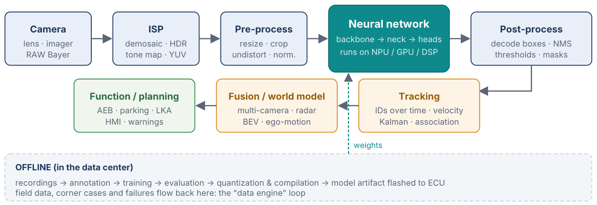
Why deep learning took over camera perception
Classic computer vision (before roughly 2012–2015) solved detection with hand-designed features: edges, HOG (histograms of oriented gradients), Haar features, plus a classifier such as an SVM or a boosted cascade. Engineers decided what to look at. This worked for constrained problems — lane markings on clean roads, frontal faces — but broke on the long tail: a pedestrian carrying an umbrella, a truck half-hidden behind a bus, a child at night in rain.
Deep learning flips the approach: instead of designing features, you design a trainable function with millions of parameters and show it hundreds of thousands of labelled examples. The network learns which features matter. The result is dramatically better accuracy on messy real-world scenes, and — very important for industry — a development process that scales with data rather than with expert hours spent hand-tuning rules.
The price: you trade explicit, explainable logic for a statistical model. That has consequences for safety argumentation (SOTIF, ISO/PAS 8800), for compute (you need an NPU), and for development process (data management becomes as important as code). These themes come back throughout this guide.
The vocabulary map
Almost every vision network today is built from the same three parts. Learning to see this structure makes any new paper or vendor architecture easy to read.
| Part | What it does | Typical examples |
|---|---|---|
| Backbone | Turns the image into rich feature maps — "what is where" at several scales. Usually pre-trained on a large dataset (ImageNet or self-supervised). | ResNet, MobileNet, EfficientNet, RegNet, CSPDarknet, ConvNeXt, ViT, Swin |
| Neck | Mixes features from different scales so both small and large objects are well represented. | FPN, PAN, BiFPN, transformer encoder |
| Head(s) | Task-specific output layers: boxes + classes, segmentation masks, depth values, keypoints, lanes. One backbone can feed many heads ("multi-task network"). | YOLO head, RPN + RoI head, DETR decoder, segmentation decoder, depth decoder |
"A perception network is a shared feature extractor — the backbone — with small task-specific heads on top. We spend most compute on the backbone once per frame, and then each function (objects, free space, lanes, parking slots) gets its own cheap head. That's why adding a new task is usually much cheaper than adding a new network."
1Neural network fundamentals
A neural network is a very large, very flexible mathematical function whose parameters are found automatically from examples. Everything else — CNNs, transformers, YOLO — is a particular way of arranging the same few ingredients: weighted sums, non-linear activations, a loss that measures error, and gradient descent that reduces it.
1.1The neuron: a weighted vote
A single artificial neuron takes some numbers as input (pixel values, or outputs of earlier neurons), multiplies each by a weight, adds them up together with a bias, and then passes the sum through a simple non-linear function called the activation. That's all. A weight says "how much do I care about this input, and in which direction"; the bias shifts the threshold at which the neuron "fires".
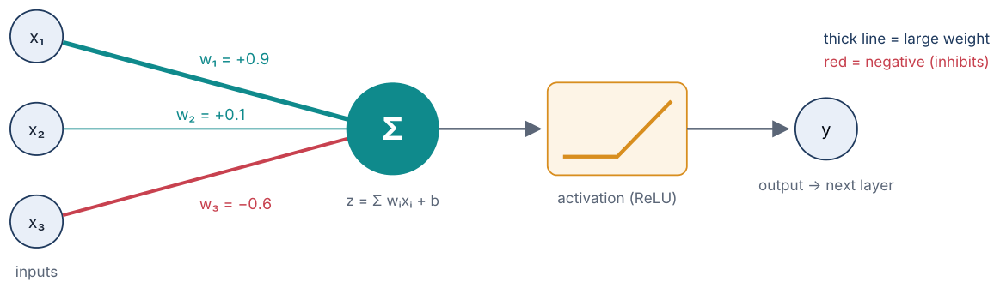
Stack many neurons side by side and you get a layer; stack layers and you get a deep network. Early layers compute simple patterns from raw inputs; later layers compute patterns of patterns. The word "deep" just means many layers — modern vision backbones have 50 to 200.
Why the activation function is essential
Without a non-linear activation, any stack of layers collapses mathematically into a single linear transformation — a hundred layers would be no more powerful than one. The non-linearity is what lets a network bend decision boundaries around complicated shapes like "pedestrian" versus "lamppost".
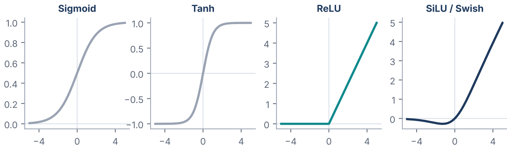
Activation choice is a deployment decision, not just an accuracy one. Many automotive NPUs execute ReLU and ReLU6 for free (fused into the convolution) but implement SiLU, GELU or Hard-Swish with a lookup table, a slower path, or not at all. Teams often retrain a model with ReLU instead of SiLU, losing perhaps a fraction of a mAP point but gaining large speed-ups and a cleaner INT8 quantization.
1.2How a network learns
A freshly created network has random weights and produces garbage. Training is the process of nudging those weights, millions of times, until the outputs match the labels. It is a loop of four steps that repeats for every mini-batch of images:
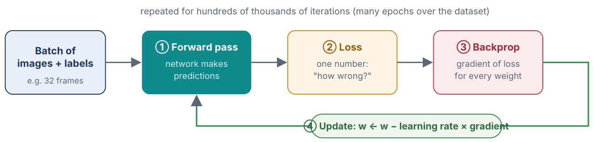
The loss function: turning "wrong" into a number
The loss compresses the network's error into one number that can be minimised. The choice of loss encodes what you care about:
- Cross-entropy for classification ("is this a car, truck or pedestrian?"). It strongly punishes confident wrong answers.
- L1 / L2 / Smooth-L1 for regression of continuous values (box coordinates, depth). L2 squares the error so it is sensitive to outliers; L1 is more robust; Smooth-L1 combines both.
- IoU-based losses (GIoU, DIoU, CIoU) for boxes: they directly optimise box overlap rather than four independent coordinates (see Chapter 5).
- Focal loss for detection with extreme class imbalance — most of an image is background (Chapter 7).
- Dice / IoU loss for segmentation, so thin or small classes (lane markings, poles) are not drowned out by large ones (road, sky).
A detector usually has a sum of losses — classification + box regression + objectness — with weighting factors. Tuning those weights is part of the craft.
Gradient descent and backpropagation
Imagine the loss as a mountain landscape where every weight is one coordinate. Training means walking downhill. The gradient tells you, for every weight, in which direction the loss increases and how steeply; you step the opposite way. Backpropagation is simply the efficient algorithm (the chain rule from calculus, applied layer by layer from the output back to the input) that computes this gradient for millions of weights at roughly the cost of two forward passes.
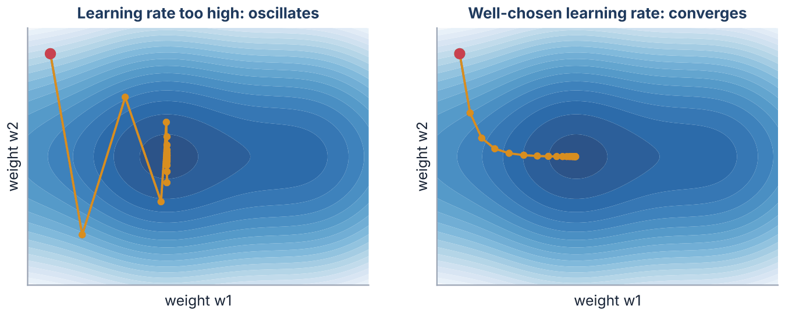
In practice nobody uses plain gradient descent. Key refinements you will hear about:
- Mini-batch SGD: compute the gradient on a small random batch (8–256 images) rather than the full dataset — noisy but fast, and the noise actually helps generalisation.
- Momentum, Adam, AdamW: optimizers that keep a running average of past gradients, like a ball with inertia. AdamW is the default for transformers; SGD with momentum is still popular for CNN detectors.
- Learning-rate schedule: start with a short warm-up, then decay (cosine or step). A large share of "the model doesn't converge" problems are learning-rate problems.
- Epoch: one full pass over the training set. Detectors are typically trained for tens to a few hundred epochs.
1.3Generalisation: the real goal
A network with tens of millions of parameters can memorise its training set perfectly — and then fail on a new street. What we actually want is generalisation: good performance on data the network has never seen. That's why data is always split into training, validation (to tune and pick checkpoints) and a held-out test set, ideally from different cities, days, and vehicles, never just different frames of the same drive.
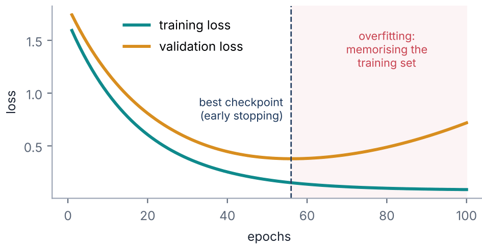
Tools against overfitting:
- More and more diverse data — by far the most effective.
- Data augmentation: random crops, flips, scale changes, colour/brightness jitter, blur, noise, mosaic (stitching 4 images), synthetic rain/fog. For cameras, augmenting in a way that mimics your ISP and lens matters more than generic tricks.
- Weight decay (penalise large weights) and dropout (randomly switch off neurons during training).
- Early stopping: keep the checkpoint with the best validation score.
- Pre-training / transfer learning: start from a backbone already trained on millions of images, then finetune. This is standard practice — nobody trains a production backbone from random weights on only their own data.
The most common evaluation mistake in automotive datasets is splitting by frame rather than by sequence or location. Consecutive frames at 30 fps are nearly identical, so a randomly split test set contains near-copies of training images and reports fantastic accuracy that collapses in the field. Always split by drive, route, or geography.
1.4Normalisation layers
Batch Normalization (BN) rescales each layer's outputs to have zero mean and unit variance over the batch, then applies a learned scale and shift. It made deep networks much easier to train. In deployment, BN becomes a fixed multiply-add that compilers fold into the preceding convolution — it costs nothing at inference. Transformers use LayerNorm instead, which normalises across features per token; it cannot be folded away as easily and is one of the reasons transformers are more awkward on some NPUs.
1.5Size, compute and the numbers people quote
| Metric | Meaning | Why you care |
|---|---|---|
| Parameters | Number of learned weights (e.g. 3 M for a tiny YOLO, 25 M for ResNet-50, 300 M+ for big ViTs). | Memory footprint of the model file; at INT8 one parameter ≈ 1 byte. |
| FLOPs / MACs | Arithmetic operations per inference (1 MAC = multiply + add ≈ 2 FLOPs). | First-order estimate of compute; scales with input resolution squared. |
| Activations memory | Size of intermediate feature maps. | Often the true bottleneck on embedded chips: moving feature maps to/from DRAM costs more time and energy than the arithmetic. |
| Latency / throughput | Milliseconds per frame / frames per second on the target. | The only number that really counts — FLOPs predict it poorly on NPUs. |
"Training is an optimisation problem solved offline on GPUs: we show the network labelled examples, measure the error with a loss function, and adjust millions of weights by gradient descent. In the car we only run the forward pass with frozen weights — no learning happens in the vehicle. So the network's behaviour is fixed and testable for a given software release; improvements come through new releases trained on better data."
2Convolutional neural networks (CNNs)
A fully connected network treats an image as one long list of numbers and forgets that neighbouring pixels belong together. A CNN builds in two common-sense facts about images: what matters is local (an edge is defined by a few adjacent pixels), and a pattern means the same thing wherever it appears (a wheel is a wheel in the left or the right of the frame). Those two assumptions make CNNs efficient, data-friendly and very hardwarefriendly — which is why they still dominate embedded automotive vision.
2.1The convolution operation
A convolution layer slides a small grid of weights — a kernel or filter, typically 3×3 — across the image. At every position it computes a weighted sum of the pixels under it and writes one number into an output map. Because the same kernel is used at every position ("weight sharing"), a 3×3 filter over an RGB input has only 27 weights + 1 bias, whether the image is 640×480 or 3840×2160.
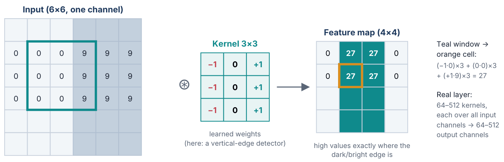
The knobs of a convolution layer
- Kernel size — usually 3×3; 1×1 kernels mix channels without looking at neighbours (cheap "channel mixing"); 5×5 and 7×7 appear in stems and modern ConvNeXt-style designs.
- Channels — each layer has many kernels; each produces one output channel. Think of a channel as "one kind of detector": one fires on horizontal edges, another on red blobs, a deeper one on wheel-like shapes.
- Stride — step size. Stride 2 halves the width and height of the output: the main way networks reduce resolution.
- Padding — adding zeros around the border so output size stays the same.
- Dilation — spacing out kernel taps to see a wider area without more weights (important in segmentation, Chapter 10).
2.2From edges to objects: the feature hierarchy
A CNN is a sequence of stages. Each stage applies several convolutions and then downsamples by 2 (via stride-2 convolution or pooling). Resolution shrinks while the number of channels grows. The result is a feature pyramid: early, high-resolution maps say precisely where simple things are; late, low-resolution maps say what complex things are, but only coarsely where.
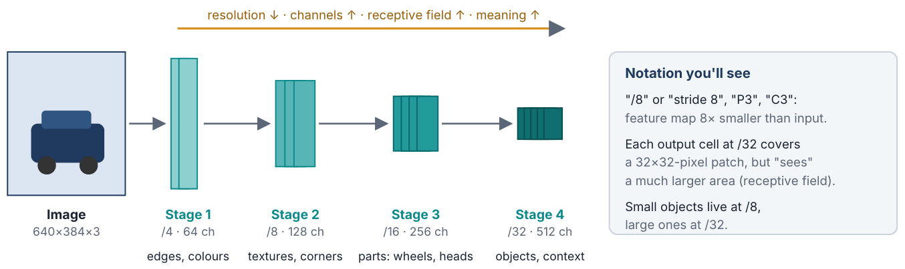
Receptive field — what a neuron can "see"
Each output of a 3×3 conv sees a 3×3 window. Stack two and each output depends on a 5×5 area; add downsampling and the area grows rapidly. The receptive field is the region of the input image that can influence a given output value. To recognise a truck that fills half the image, some neurons need a receptive field at least that large. In practice the effective receptive field is smaller than the theoretical one — the centre pixels dominate — which is one motivation for attention mechanisms (Chapter 3) that can relate distant pixels directly.
Pooling
Max pooling takes the maximum value in each 2×2 window, halving resolution and giving a little tolerance to small shifts. Modern networks often replace it with stride-2 convolutions. Global average pooling at the very end collapses a whole feature map into one vector for classification.
2.3The architectural milestones (and why each mattered)
| Network | Year | Key idea | Why it matters today |
|---|---|---|---|
| AlexNet | 2012 | Deep CNN trained on GPUs with ReLU and dropout; won ImageNet by a huge margin. | Started the deep-learning era. |
| VGG | 2014 | Only 3×3 convs, stacked deep. Simple and uniform. | Classic SSD backbone; heavy but very regular. |
| ResNet | 2015 | Residual (skip) connections enable 50–150+ layers. | Still the reference backbone; ResNet-18/34/50 everywhere. |
| MobileNet v1–v3 | 2017–19 | Depthwise-separable convs; inverted residual blocks. | Designed for phones — a natural fit for ECUs. |
| EfficientNet | 2019 | Scale depth, width and resolution together. | Good accuracy per FLOP; some ops awkward on NPUs. |
| RegNet, CSPNet, RepVGG | 2019–21 | Hardware-aware, regular designs; RepVGG trains multi-branch but deploys as plain 3×3 convs. | Common in YOLO-style and automotive backbones. |
| ConvNeXt | 2022 | A CNN "modernised" with transformer-era tricks. | Shows CNNs can match ViTs at similar scale. |
Residual connections: the most important trick in deep learning
Around 2015, researchers noticed a paradox: adding more layers to a plain CNN made it worse, even on training data. The gradient signal faded as it passed backwards through dozens of layers. ResNet's fix is almost embarrassingly simple: let each block compute a correction to its input and add the input back — output = x + F(x) . If a block isn't useful it can learn F ≈ 0 and pass information straight through. Gradients flow cleanly along the "skip" path. Every modern architecture, including transformers, uses this idea.
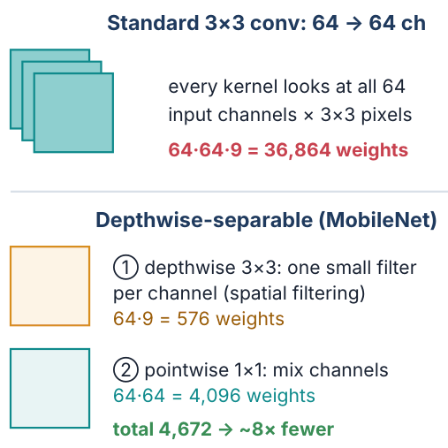
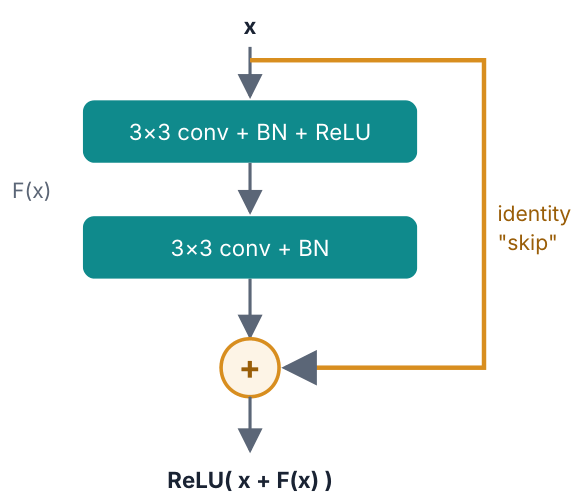
Depthwise convolutions save FLOPs, but they have very little arithmetic per byte of data moved. On GPUs and many NPUs that are built around large matrix-multiply units, a depthwise layer may run at a small fraction of peak utilisation. That's why some hardware-aware designs (RepVGG, many YOLO backbones, RegNet) deliberately use "more FLOPs but denser ops" and still run faster. Always benchmark on the target chip.
2.4Upsampling: going back to high resolution
Classification only needs one label per image, so it can shrink the image to almost nothing. Segmentation, depth, and small-object detection need dense, high-resolution outputs. Networks use upsampling to go back: nearest-neighbour or bilinear interpolation (cheap, no weights) or transposed convolution (learned, but can produce checkerboard artefacts). Combined with skip connections from the encoder, this creates the encoder–decoder ("U-shape") design used in segmentation.
2.5Feature Pyramid Network (FPN): one net, all object sizes
A car 5 m away may be 300 pixels tall; one 80 m away may be 15 pixels tall. Deep, low-resolution features are semantically strong but too coarse for tiny objects; shallow features are precise but "dumb". The FPN neck solves this by running a top-down path that upsamples deep features and adds them to shallower ones, so every pyramid level has both rich meaning and good localisation. Detection heads then run on each level: small objects on P3 (/8), large ones on P5 (/32). PAN (used in YOLO) adds an extra bottom-up path; BiFPN (EfficientDet) adds learned weights when merging.
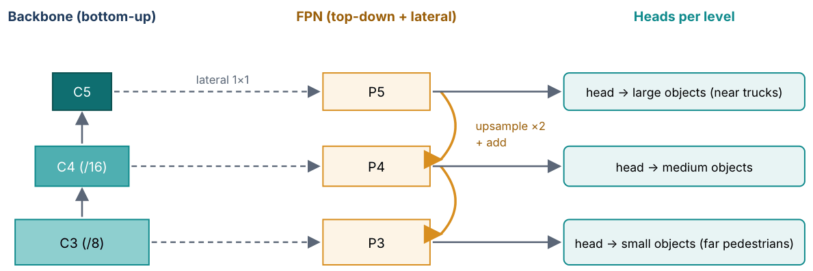
For automotive, small-object performance at distance usually drives the design: a pedestrian at 60–80 m in a front camera can be only 15–30 pixels tall. That pushes teams towards higher input resolution, a strong P2/P3 level, and tiling or region-of-interest crops of the horizon area — each with direct cost on compute and DRAM bandwidth. For surround-view fisheye cameras the challenge is different: objects are close and large but heavily distorted near the image border.
"A CNN slides small learned filters over the image. Early layers detect edges, later layers combine them into parts and objects, and resolution decreases as meaning increases. A feature pyramid network then merges these levels so we can detect both a nearby truck and a distant pedestrian in a single pass. CNNs are very efficient on automotive accelerators because convolutions map perfectly onto their multiply-accumulate arrays."
3Attention and transformers
Convolutions look locally and build up context slowly, layer by layer. Attention lets every part of the input look at every other part directly, in one step, and decide for itself what is relevant. Transformers — networks built mainly from attention — took over language processing in 2017 and have since reshaped vision: from DETR detection to the multicamera BEV networks that now drive automated parking and highway pilots.
3.1The intuition: a learned, content-dependent lookup
Think about how you decide whether a dark blob on the road is a shadow or a pothole. You look at the blob, but you also look at the tree next to it, the position of the sun, the shadows of other cars. Which other parts of the image matter depends on what the blob looks like. A convolution can't do this: its weights are fixed, and it only sees its neighbourhood. Attention can.
In attention, the input is a set of tokens — feature vectors representing words, image patches, or cells in a bird's-eye-view grid. For every token, the network computes how relevant every other token is, and builds a new representation as a weighted average of them. The weights are not fixed parameters; they are computed on the fly from the content.
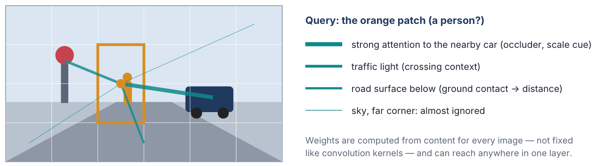
3.2Query, Key, Value — the mechanics
The standard formulation borrows vocabulary from databases. Each token produces three vectors through three small learned linear layers:
- Query (Q) — "what am I looking for?"
- Key (K) — "what do I contain / what can I offer?"
- Value (V) — "the information I hand over if you pick me."
The relevance of token j to token i is the dot product of \(Q_i\) and \(K_j\) — large when they point in the same direction. Dividing by \(\sqrt{d}\) (the vector length) keeps the numbers in a stable range, and a softmax turns each row of scores into weights that sum to 1. The output for token i is the weighted sum of all values.
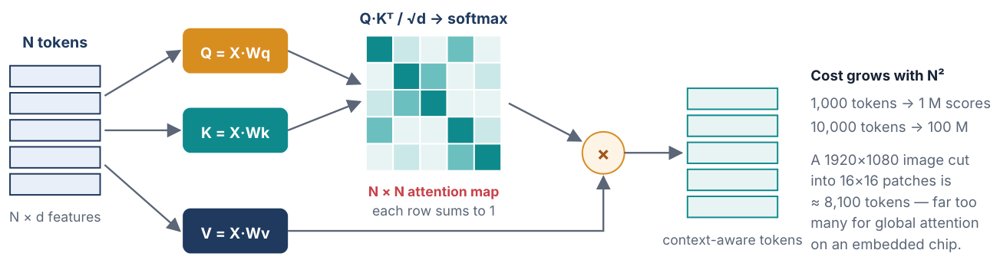
Multi-head attention
One attention pattern can only capture one kind of relationship at a time. Multi-head attention runs several (typically 8–16) smaller attention operations in parallel, each with its own Q/K/V weights, and concatenates the results. In practice heads specialise: one may focus on nearby tokens, another on tokens of the same colour or texture, another on geometric relations.
Self-attention vs. cross-attention
In self-attention Q, K and V all come from the same set of tokens — the image talks to itself. In crossattention the queries come from one set and keys/values from another. This is extremely useful: in DETR, a set of "object queries" asks the image features "is there an object for me?"; in BEVFormer, each cell of a bird's-eye-view grid sends a query into the camera images to fetch the features that project onto it. Crossattention is the general-purpose tool for "pull information from somewhere else into my representation."
3.3The transformer block
A transformer is a stack of identical blocks. Each block has two sub-layers: multi-head attention (tokens exchange information) and a small two-layer MLP applied to each token independently (each token "thinks" about what it gathered). Both sub-layers are wrapped in a residual connection and a LayerNorm — exactly the ResNet idea from Chapter 2.
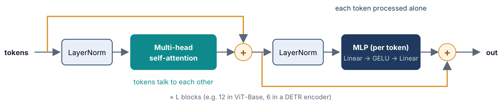
Positional encoding: telling the transformer where things are
Attention by itself treats its input as an unordered set — shuffle the tokens and you get the same (shuffled) output. For images, position is crucial. Transformers therefore add a positional encoding to each token: a fixed sinusoidal pattern or a learned vector per position. In multi-camera automotive networks, this idea is extended to 3D positional encodings that encode the camera ray of each pixel using the calibration (intrinsics and extrinsics) — so the network knows which direction in the vehicle frame each feature looks in (PETR family).
3.4CNN vs. transformer: an honest comparison
| Aspect | CNN | Transformer / attention |
|---|---|---|
| Built-in assumptions | Strong: locality, translation equivariance. Learns well from moderate data. | Weak: must learn spatial structure from data; needs much more data or pre-training. |
| Context | Grows slowly with depth. | Global from the first layer. |
| Compute scaling | Linear in pixels. | Quadratic in tokens (global attention). |
| Embedded support | Excellent: conv is the "native" op of every NPU; INT8 mature. | Improving: matmuls fine, but softmax, LayerNorm, GELU and dynamic shapes are harder; INT8 more delicate. |
| Strength | Efficient per-frame perception on small chips. | Fusing many cameras, time steps and sensors; set prediction; large-scale pretraining. |
Most vision transformers avoid full global attention. Windowed attention (Swin) restricts attention to local windows and shifts them between layers. Deformable attention (Deformable DETR, BEVFormer) lets each query attend to only a few (e.g. 4) learned sampling points instead of all N tokens — linear cost and great for multi-camera setups. Linear/efficient attention variants approximate the softmax. Memory-efficient kernels such as FlashAttention compute exact attention without materialising the N×N matrix, but they are mainly a GPU feature; embedded compilers may not have an equivalent.
Production stacks today are typically hybrid: a CNN backbone per camera extracts features efficiently, and attention is used where it is uniquely valuable — lifting image features into a shared bird's-eye view, fusing several cameras, and aggregating information over time. When evaluating an SoC, ask explicitly about support and INT8 accuracy for softmax, LayerNorm, GELU, gather/grid-sample (used by deformable attention) and large matmuls — those are where transformer deployments usually stall.
"Attention lets each part of the scene decide which other parts are relevant and pull information from them — in one step, across the whole image or even across cameras. Convolutions are cheaper and better for local patterns; attention is better for global context and for fusing multiple views. Modern automotive networks combine both: CNN features per camera, attention to build one consistent 3D/BEV picture of the surroundings."
4Vision Transformers (ViT) and foundation backbones
The Vision Transformer (2020) asked a provocative question: what if we throw away convolutions almost entirely, cut the image into patches, treat each patch like a word, and feed the sequence to a standard transformer? The answer: with enough data, it works as well as or better than the best CNNs — and it scales beautifully. ViT-style backbones now underpin the large "foundation models" (SAM, DINOv2, Depth Anything) that are increasingly used in automotive tooling and as teachers for smaller in-vehicle networks.
4.1How ViT turns an image into tokens
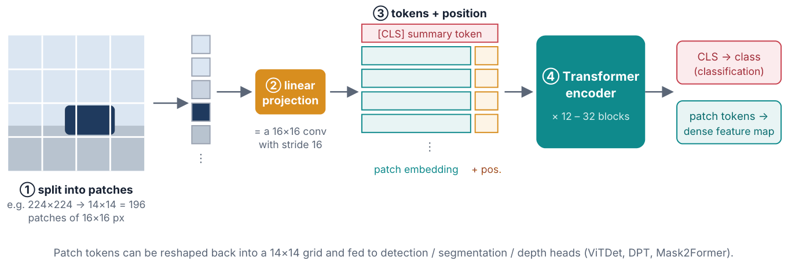
Step by step:
- Patchify. The image is cut into non-overlapping squares, typically 16×16 or 14×14 pixels. Each patch is flattened into a vector (16·16·3 = 768 numbers).
- Embed. A learned linear layer maps each patch to a feature vector (the "token"). Mathematically this is just a convolution with kernel size = stride = patch size.
- Add position. A learned position embedding is added to each token so the model knows where the patch came from. An extra learned [CLS] token is often prepended; after the encoder it holds a summary of the whole image.
- Encode. A stack of transformer blocks lets every patch attend to every other patch from layer one — global context immediately.
- Read out. For classification, use the CLS token. For dense tasks (detection, segmentation, depth), reshape the patch tokens into a 2D map and attach a decoder.
4.2Why ViT needs so much data — and how that was solved
A CNN "knows" from its design that nearby pixels relate and that patterns repeat across positions. A ViT has to learn even this from data. Trained only on ImageNet-1k (1.3 M images), the original ViT underperformed ResNets; pre-trained on 300 M images it overtook them. Three developments made ViTs practical:
- Better training recipes (DeiT): strong augmentation, regularisation and distillation from a CNN teacher allowed competitive ViTs trained on ImageNet alone.
- Self-supervised pre-training: learn from unlabelled images. MAE masks out ~75 % of patches and trains the network to reconstruct them; DINO / DINOv2 train the network to produce consistent features across different crops of the same image. No labels needed — perfect for the huge amount of unlabelled fleet video in automotive. Section 4.5 explains how these methods work.
- Hierarchical designs (Swin, PVT, MViT) that re-introduce CNN-like multi-scale feature maps and local windows.
4.3Swin Transformer: a ViT that behaves like a CNN backbone
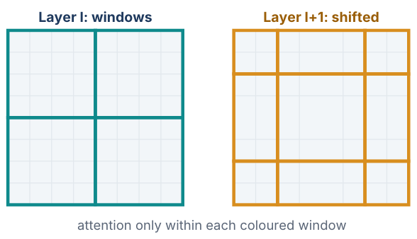
The plain ViT has two problems for detection: a single coarse resolution (/16) and global attention whose cost explodes at high resolution. The Swin Transformer fixes both. It computes attention only inside local windows (e.g. 7×7 patches), so cost grows linearly with image size, and it shifts the window grid by half a window in alternating layers so information flows across window borders. Between stages it merges patches (like stride-2 pooling), producing the /4, /8, /16, /32 pyramid that FPN-style necks expect. Swin became a popular drop-in backbone for Faster R-CNN, Mask R-CNN and many BEV networks.
4.4Foundation models — why every vision team now talks about them
A foundation model is a very large network pre-trained on enormous, broad data so that it can be adapted to many tasks with little extra labelling. In vision, most are ViT-based. They are typically far too large to run in a production ECU, but they change how development is done:
| Model (family) | What it does | Typical automotive use |
|---|---|---|
| DINOv2 (Meta) | Self-supervised ViT features that transfer well to segmentation, depth, retrieval. | Strong pre-trained backbone; featuresimilarity search to mine "more data like this corner case". |
| SAM / SAM 2 (Segment Anything) | Promptable segmentation: click or box → precise mask; SAM 2 extends to video. | Speeding up mask annotation dramatically; auto-labelling pipelines. |
| CLIP-style visionlanguage models | Align images and text in one embedding space. | Text search through fleet data ("pedestrian with umbrella at night"); open-vocabulary detection. |
| Depth Anything (v1/v2) | Monocular relative depth from a DINOv2 backbone. | Pseudo-labels for depth training; offline analysis. |
The common pattern is teacher → student: a big foundation model generates labels or features offline, and a small, efficient, automotive-qualified network is trained (distilled) to reproduce the relevant part of that behaviour within the ECU's budget.
Pure ViT backbones are still rare in cost-sensitive production ECUs. The issues are practical: quadratic attention at automotive resolutions (1–8 MP), operators like LayerNorm/softmax/GELU that are less efficient or less accurate in INT8, and higher memory traffic. Where transformers appear in production, they are usually in the fusion and BEV part of the network, or in efficient hybrid forms (convolutional stem + windowed or deformable attention). Expect this to keep shifting as newer NPUs add native transformer support.
Studies have found ViTs often degrade more gracefully than CNNs under some corruptions and occlusions, and rely more on shape than texture. That's attractive for SOTIF arguments about robustness to weather and partial occlusion — but it is not a guarantee, and has to be demonstrated on your own data and failure modes.
"A Vision Transformer cuts the image into patches and lets every patch attend to every other one, so it reasons about the whole scene at once. It needs lots of data, which is why large self-supervised 'foundation models' were a breakthrough. We use those big models offline — for auto-labelling, data search and as teachers — and distil their knowledge into compact networks that fit our ECU."
4.5Self-supervised pretraining: how a backbone learns without labels
Section 4.2 said that self-supervised pretraining is what made large backbones practical, and Section 4.4 listed the foundation models that came out of it. This section explains how such a backbone can learn anything at all when nobody tells it what is in the images. The problem it solves is economic. A labelled pedestrian box costs money and time, a labelled segmentation mask costs far more, while a test fleet records millions of unlabelled frames every week. If the network could learn general visual features from the unlabelled frames, the expensive labels would only be needed for the last step: teaching a small head what the task is.
The trick is to invent a task whose answer is already in the data. Early attempts used puzzles: predict how an image was rotated, put shuffled tiles back in order, colour a grey image. They worked a little, but the network learned to solve the puzzle rather than to understand the scene. Three ideas replaced them, and every modern foundation backbone uses one of them or a mix: contrastive learning, self-distillation and masked image modelling. Figure 4.3 shows all three.
Contrastive learning: the same image should look the same
Take one image and produce two random views of it: different crops, a colour shift, some blur. Pass both through the same encoder. The network is rewarded when the two embeddings are close and the embeddings of other images in the batch are far away. To succeed, it has to ignore what the augmentations changed (position, colour, scale) and keep what they did not change, which is the content. SimCLR (Chen et al., 2020) showed that this simple recipe works if two details are right: the augmentations must be strong, with random cropping and colour distortion together mattering most, and the comparison is made after a small MLP "projection head" that is discarded afterwards, so the encoder's own features do not have to throw away information the loss does not need.
The loss, called InfoNCE or NT-Xent, is a classification problem in disguise: for each view, pick out its partner among all the other \(2N-1\) views in the batch. With cosine similarity \(\mathrm{sim}\) and a temperature \(\tau\),
\[ \ell_i = -\log \frac{\exp(\mathrm{sim}(z_i, z_{j(i)})/\tau)}{\sum_{k \ne i} \exp(\mathrm{sim}(z_i, z_k)/\tau)} \]A network that has learned nothing scores \(\log(2N-1)\): 6.2 for a batch of 256 images and 9.0 for 4096. The size of the batch is the difficulty of the task, which is why SimCLR needed batches of several thousand images. MoCo (He et al., 2020) removed that requirement by keeping a queue of embeddings from earlier batches as negatives, encoded by a momentum copy of the network whose weights follow the trained network slowly, so the old embeddings stay comparable.
Self-distillation: no negatives, but a moving teacher
Negatives are expensive and also slightly wrong: two different images of the same street are treated as "different" even though they share most of their content. BYOL (Grill et al., 2020) and DINO (Caron et al., 2021) dropped negatives entirely. A student network sees one view and must predict the output of a teacher that sees another view of the same image. The teacher is not trained by gradients; its weights are an exponential moving average of the student's, with a momentum that rises from 0.996 towards 1 during training. The obvious danger is collapse: if both networks output the same constant for every image, they agree perfectly and the loss is zero. DINO prevents this with two opposing operations on the teacher's output. Centring subtracts a running mean, so no single output dimension can win for all images; sharpening uses a low softmax temperature, so the output cannot become uniform either. DINO also uses multi-crop: the teacher sees only two large "global" crops, the student also sees several small "local" crops, so the student has to infer the whole object from a part of it.
Trained this way on ImageNet without labels, a ViT-S/16 reaches about 77 % top-1 accuracy with only a linear classifier on its frozen features, and its last-layer attention maps separate objects from background without ever being told what an object is. DINOv2 (Oquab et al., 2023) scaled the recipe to a curated set of 142 million images, combined it with a masked-modelling loss, and distilled the large model into smaller ones; its frozen features are good enough that a light head on top gives competitive depth and segmentation (Landmark papers 9.9). DINOv3 (2025) pushed the same line further (Perception tasks 10.1).
Masked image modelling: hide most of the image and ask for it back
The language-model recipe of BERT hides about 15 % of the words and predicts them. Hiding 15 % of an image does not work as well, because neighbouring pixels are so redundant that a missing patch can be filled in by interpolation without understanding anything. MAE (He et al., 2022) hides 75 % of the patches at random. The large ViT encoder sees only the visible quarter, which makes pretraining about three times cheaper, and a small decoder that receives the encoded patches plus placeholder "mask tokens" reconstructs the pixels; the loss is computed only on the hidden patches. To fill in three quarters of a car from scattered pieces, the encoder has to know what cars look like. After pretraining the decoder is thrown away.
The families learn different things. Contrastive and self-distillation methods learn features that are already linearly separable by class, because the loss pushes semantically different images apart; they look good with a frozen backbone and a linear probe. MAE features are richer in local detail but less organised, so MAE needs fine-tuning of the whole encoder to shine, and then it does very well, especially on dense tasks. I-JEPA (Assran et al., 2023) sits between the two: it masks blocks like MAE but predicts the teacher's features of the hidden region instead of its pixels, so the network is not forced to spend capacity on texture noise.
The augmentations define what the features ignore. SimCLR-style colour distortion teaches the backbone that colour does not matter, which is exactly wrong for traffic-light state, brake lights and lane-marking colour; horizontal flips teach that left and right are the same, which is wrong for arrows on signs and for the side of the road a vehicle drives on. Pretraining on fleet data needs augmentations chosen for the task family, or the information has to be recovered later by fine-tuning.
Teams use self-supervision in three ways. They start from a public self-supervised backbone and fine-tune it; they continue pretraining that backbone on their own unlabelled camera data (domain-adaptive pretraining), which helps when the cameras, lenses or ISP differ a lot from internet photos; or they use a large self-supervised model offline as a teacher and feature extractor for data mining and auto-labelling, while the network in the car stays small. Driving video also offers free signals that internet photos do not: adjacent frames and overlapping cameras show the same scene from slightly different viewpoints, which makes natural positive pairs. How to fine-tune is Training 5.2.
Chance-level InfoNCE is \(\log(2N-1)\): 6.24 for N = 256, 7.62 for N = 1024, 9.01 for N = 4096. MoCo's queue holds 65,536 negatives. DINO's teacher momentum goes from 0.996 to 1. MAE masks 75 % of patches; BERT masks 15 % of tokens.
5Object detection fundamentals: boxes, IoU, anchors, NMS, mAP
Every detector — YOLO, SSD, Faster R-CNN, DETR — answers the same question: which objects are in this image, and where exactly? Before comparing architectures, it pays to master the shared building blocks. These concepts (IoU, anchors, NMS, mAP) come up in every design review, every KPI discussion and every customer meeting.
5.1The family of vision tasks
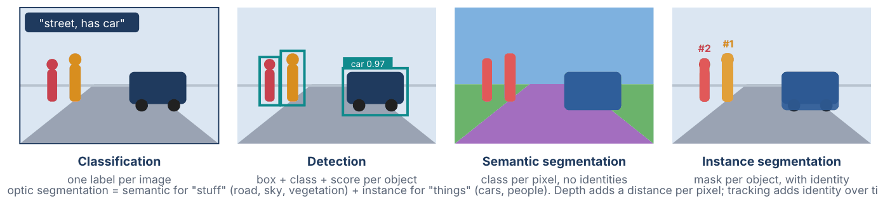
5.2The bounding box
A 2D bounding box is the smallest axis-aligned rectangle enclosing an object. It is crude — a box around a diagonal truck contains lots of road — but it is cheap to annotate, cheap to predict and good enough for most decisions. Several equivalent formats exist and mixing them up is a classic bug:
| Format | Values | Where you see it | |
|---|---|---|---|
xyxy | left, top, right, bottom | Pascal VOC, most NMS implementations | |
xywh | left, top, width, height | COCO annotations | |
cxcywh (often normalised 0–1) | centre x, centre y, width, height | YOLO label files, DETR outputs |
Networks rarely predict absolute pixel coordinates directly. They predict offsets relative to a reference — an anchor box or a grid-cell centre — usually as small shifts of the centre and log-scale changes of the width and height. Predicting log(w/wanchor) makes "twice as wide" and "half as wide" symmetric and keeps the regression targets in a small, well-behaved range. Turning these raw outputs back into pixel boxes is called decoding and is part of post-processing.
Beyond 2D boxes, ADAS functions need 3D information: distance, orientation, real-world size and velocity. Production detectors therefore often add extra regression outputs per object — 3D dimensions, yaw, depth of the box centre, or the bottom-contact point (where the object touches the road) used with camera calibration and a ground-plane assumption to compute distance. Errors in camera extrinsics (pitch especially) translate directly into distance errors — a link between calibration (EOL/online) and perception KPIs worth remembering.
5.3IoU — Intersection over Union
How do you measure if a predicted box is "correct"? IoU is the area where two boxes overlap divided by the area they cover together. It's 1 for a perfect match and 0 for no overlap. IoU is used everywhere: to decide which anchor is responsible for which object during training, to decide which boxes to suppress in NMS, and to decide whether a detection counts as a true positive in evaluation.
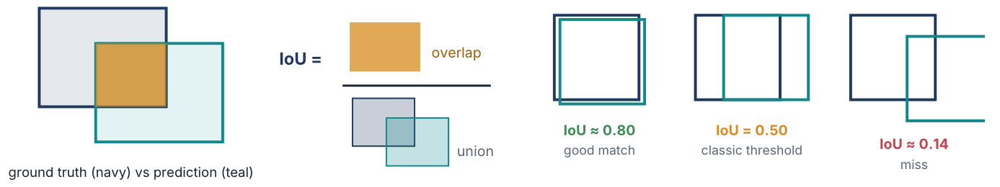
Training a box with L1 loss on four coordinates treats them as independent and doesn't directly optimise what we measure. IoU-based losses fix that. Plain IoU loss has a problem: if boxes don't overlap, IoU is 0 regardless of distance, so there's no gradient. GIoU adds a penalty based on the smallest box enclosing both; DIoU adds centre distance; CIoU also adds aspect-ratio consistency. CIoU/DIoU-style losses are standard in modern YOLO versions.
5.4Anchors — and why many detectors dropped them
A detector must produce a variable number of objects of very different sizes and shapes. Early solutions created a fixed set of anchor boxes (also called default boxes or priors): at every position of the feature map, a handful of template boxes with different scales and aspect ratios. A tall thin one for pedestrians, a wide one for cars, a big one for trucks. The network's job then becomes simpler: for each anchor, say "is there an object here, which class, and how should I adjust this template to fit it?"
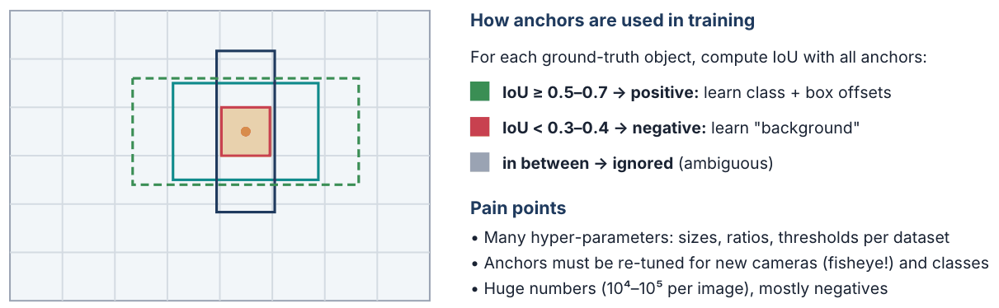
From about 2019 on, anchor-free detectors became mainstream (FCOS, CenterNet, YOLOX, YOLOv8 and later). Instead of templates, each feature-map location directly predicts the distances to the four box edges (FCOS style) or the object centre plus width and height (CenterNet style). This removes most anchor hyperparameters, generalises better to unusual shapes and new cameras, and simplifies post-processing. Modern detectors combine this with smarter, dynamic label assignment (e.g. SimOTA, Task-Aligned Assigner) that picks positive samples based on how well the current predictions actually fit each object.
5.5NMS — Non-Maximum Suppression
Dense detectors look at the object from many neighbouring cells and anchors, so one real car typically produces 5–30 overlapping candidate boxes. NMS cleans this up with a simple greedy algorithm:
- Drop all boxes with confidence below a threshold (e.g. 0.25).
- Sort the remaining boxes by confidence and take the best one — it's kept.
- Delete every remaining box of the same class whose IoU with the kept box is above the NMS threshold (typically 0.45–0.7).
- Repeat with the next-highest surviving box until none are left.
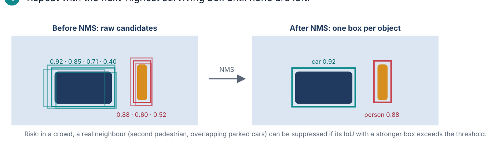
NMS looks trivial but has real engineering weight:
- Crowded scenes: two pedestrians walking side by side, or a row of parked cars, can have IoU above threshold — NMS deletes a real object. Variants such as Soft-NMS (decay scores instead of deleting) and class-aware or distance-aware thresholds mitigate this. Section 5.7 compares them.
- Latency is data-dependent: its run time grows with the number of candidates, which varies frame to frame — awkward for real-time scheduling and WCET analysis.
- Hardware placement: NMS is sequential and branchy, a poor fit for NPUs, so it usually runs on a CPU or DSP. Moving thousands of candidate boxes off the NPU costs bandwidth; capping top-K candidates before NMS is standard.
This is why NMS-free detectors — DETR (Chapter 8) and YOLOv10-style designs with one-to-one label assignment — are attractive for embedded deployment: the network itself learns to output exactly one box per object.
5.6Measuring detector quality: precision, recall, AP, mAP
A detection counts as a true positive (TP) if it matches a not-yet-matched ground-truth object of the same class with IoU above a threshold. Unmatched detections are false positives (FP) (ghost objects — potentially phantom braking); unmatched ground-truth objects are false negatives (FN) (missed objects — potentially no braking).
- Precision = TP / (TP + FP): of everything we
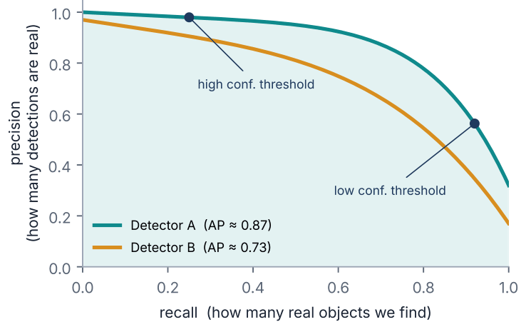
reported, how much was real?
- Recall = TP / (TP + FN): of everything real, how much did we find?
The confidence threshold trades one against the other. Sweep it from high to low and you trace a precision–recall curve. The area under it is the Average Precision (AP) for one class; the mean over classes is mAP.
COCO-style mAP@[.5:.95] averages AP over IoU thresholds 0.50, 0.55 … 0.95, rewarding precise boxes. mAP@0.5 (Pascal VOC style) only asks for rough localisation and gives much higher numbers — always check which one a vendor quotes.
mAP averages over all classes, all object sizes, all distances and all thresholds. A model can gain mAP by improving large, easy cars while getting worse on the pedestrians at 40 m in rain that your AEB function actually depends on. Production KPIs are usually defined per class, per distance band and per region of interest (e.g. the ego lane corridor), at the chosen operating threshold, often with requirements on time-tofirst-detection and on false positives per hour of driving rather than per image.
"A detector proposes many candidate boxes, each with a class and confidence. IoU — overlap divided by union — tells us how well two boxes match. NMS removes duplicate boxes around the same object. We measure quality with precision (are detections real?) and recall (did we find everything?), and summarise across thresholds as mAP. For the vehicle, though, we evaluate at one operating point, per class and distance, because that's what the function sees."
5.7Beyond greedy NMS: Soft-NMS, crowd-aware variants and calibrated scores
Section 5.5 described greedy NMS and noted that it can delete a real object in a crowd. This section looks at why that happens, what the common fixes do, and at the number every NMS variant manipulates: the confidence score, which downstream components often treat as something it is not.
Why one threshold cannot be right
Greedy NMS asks one question about two boxes: is their overlap above the threshold? It cannot tell whether two overlapping boxes are two guesses at the same object or correct boxes on two different objects that happen to overlap. Two people walking side by side, one slightly behind the other, easily overlap with an IoU of 0.5 to 0.6, while duplicate guesses at a single person typically overlap with 0.7 to 0.9. A low threshold removes the second person; a high threshold lets duplicates through as false positives. The threshold is a single number standing in for information NMS does not have.
Figure 5.6 makes this concrete. Three people stand in the scene; A and B overlap with IoU 0.56. The detector produced seven candidates: three for A, two for B, one for C and a low-scoring one on a bush. With greedy NMS at a threshold of 0.5, B's best box (score 0.81) overlaps A's best box with IoU 0.57, so it is deleted, and B is missed. Raise the threshold to 0.8 and B survives, but so does one of A's duplicates, which becomes a false positive.
Soft-NMS: decay instead of delete
Soft-NMS (Bodla et al., 2017) keeps the greedy loop but replaces the deletion with a penalty. When the best box \(M\) is selected, every remaining box \(b_i\) keeps its score multiplied by a factor that shrinks with the overlap. The linear version multiplies by \(1 - \mathrm{IoU}(M, b_i)\) when the overlap exceeds the threshold; the Gaussian version needs no threshold at all:
\[ s_i \leftarrow s_i \cdot \exp\!\left(-\frac{\mathrm{IoU}(M, b_i)^2}{\sigma}\right) \]A duplicate with IoU 0.85 against the kept box loses most of its score (factor 0.24 at σ = 0.5), while a neighbour with IoU 0.57 keeps more than half of it (factor 0.52), so B's box drops from 0.81 to 0.43 and stays above the output threshold. Nothing is deleted outright; the final score threshold decides. The paper reported 1.7 and 1.1 AP points of improvement on COCO for R-FCN and Faster R-CNN, with no retraining, which is why it was popular as a free improvement. The cost is that the output has more low-scoring boxes, so the score threshold after Soft-NMS has to be re-tuned, and the score of a surviving neighbour no longer means what it meant before suppression.
Other variants worth knowing
Class-aware NMS runs suppression separately per class, so a pedestrian box never suppresses a bicycle box that overlaps it; the usual implementation trick ("batched NMS") shifts each class's boxes by a large class-dependent offset so one call handles all classes. DIoU-NMS (Zheng et al., 2020) also considers the distance between box centres, so two boxes with similar overlap but separated centres are treated as different objects. Adaptive NMS (Liu et al., 2019) lets the network predict the local crowd density and uses it as a per-object threshold. Matrix NMS (from SOLOv2) computes all decays at once as a matrix operation, which suits GPUs and NPUs better than the sequential loop. Weighted box fusion averages overlapping boxes instead of picking one, which helps when combining the outputs of several models offline. The cleanest fix is to remove NMS from the model's job altogether: set-prediction detectors (Chapter 8) and one-to-one heads (Section 7.4) learn to output one box per object, including in crowds, because the training loss punishes duplicates.
The score is a ranking, not a probability
A detector's score is the output of a sigmoid on a classification logit, sometimes multiplied by a predicted localisation quality (IoU-aware scores in recent YOLO-style heads). It is trained to rank good boxes above bad ones, not to equal the fraction of boxes at that score that are correct. Whether a 0.7 box is correct 70 % of the time depends on the training loss, the NMS variant, the IoU threshold used to define "correct", the object's size and position in the image, and on quantization, which can shift scores by a few hundredths. A model update can keep the same mAP and still move every score.
That matters because components after the detector use the score as if it were a probability: a tracker starts a track when the score exceeds a birth threshold, a fusion stage weights camera and radar by their confidences, an emergency-braking function asks for a minimum existence probability. Detection calibration therefore measures the reliability of scores after NMS, on boxes matched to ground truth at a stated IoU threshold, and in slices: per class, per distance band, per image region (Küppers et al., 2020, showed that miscalibration depends on box position and size). The fixes are the same as for classifiers, applied per class and per slice: temperature scaling, Platt scaling or isotonic regression fitted on a held-out set (Training 8.1 and 8.2 explain the methods and the reliability diagram).
Calibrating before NMS and then changing the NMS (or switching to Soft-NMS) undoes the calibration, because the suppression changes which boxes survive and with which score. Calibrate the exact post-processing chain that ships, and re-check after every change to thresholds, NMS settings or quantization.
On an ECU, NMS usually runs on a CPU or DSP after the network (Edge AI 7.4). Soft-NMS has the same quadratic worst case as greedy NMS but leaves more boxes alive for longer, so cap the number of candidates (top-K before NMS) and measure the worst frame, not the average one.
6Two-stage detectors: the R-CNN family and Faster R-CNN
Two-stage detectors split the problem the way a human might: first find "something might be here" regions, then look carefully at each one to decide what it is and refine its box. This produces very accurate boxes, and the family — especially Faster R-CNN and Mask R-CNN — became the reference architecture for research, annotation tools, and offline autolabelling.
6.1A short history: why three versions in two years
| Model | How it works | Bottleneck it removed / left |
|---|---|---|
| R-CNN (2014) | Classical algorithm (Selective Search) proposes ~2,000 regions; each is cropped, resized and pushed separately through a CNN. | Very accurate for its time, but ~2,000 CNN passes per image: tens of seconds per image. |
| Fast R-CNN (2015) | Run the CNN once on the whole image; crop each region from the feature map (RoI pooling). | Huge speed-up, but region proposals still from a slow classical algorithm. |
| Faster R-CNN (2015) | A small learned Region Proposal Network (RPN) shares the backbone features and proposes regions. | Fully learned and end-to-end; "near realtime" on a GPU of that era. |
| Mask R-CNN (2017) | Adds a mask branch per region + RoI Align. | Instance segmentation; precise alignment. |
| Cascade R-CNN (2018) | Several refinement stages with rising IoU thresholds. | Higher-quality boxes at strict IoU. |
6.2Faster R-CNN, step by step
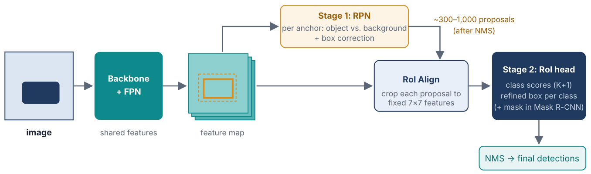
- Backbone + FPN compute feature maps once for the whole image.
- Region Proposal Network. A small conv slides over the feature map. At each position it evaluates a few anchors (e.g. 3 scales × 3 aspect ratios) and predicts an "objectness" score and a box correction for each. It doesn't care about classes — just "object or background".
- Proposal selection. The top-scoring anchors are decoded into boxes, NMS removes duplicates, and a few hundred proposals survive.
- RoI Align. For each proposal, features inside the box are resampled into a fixed-size grid (e.g. 7×7×256), regardless of the box size. Now every region has the same shape and can go through the same head.
- RoI head. A few fully connected (or conv) layers classify each region into K classes or background and regress a final, refined box.
- Post-processing. Per-class NMS and score thresholds produce the output.
6.3RoI Align — a small detail that mattered a lot
The original RoI Pooling rounded proposal coordinates to the integer feature-map grid — twice: once for the box edges and once for the sub-cells. On a /16 feature map, rounding by half a cell is 8 pixels in the image. For classification that hardly matters; for pixel-accurate masks it is a disaster. RoI Align keeps exact floating-point coordinates and computes features at sample points by bilinear interpolation. This tiny change gave a large jump in mask quality and is now used everywhere a region is cropped from a feature map — including in some BEV and tracking networks.
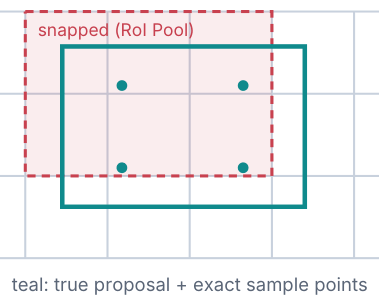
6.4Strengths, weaknesses and where you meet it
Strengths
- High localisation accuracy, especially at strict IoU and for small objects.
- Natural extension to masks (Mask R-CNN), keypoints, attributes per region.
- Very well understood; mature open-source implementations (Detectron2, MMDetection).
Weaknesses for embedded
- Two sequential stages and a variable number of regions → higher, data-dependent latency.
- RoI Align (gather with bilinear sampling) and dynamic shapes are poorly supported on many NPUs.
- Two rounds of NMS.
Classic Faster R-CNN is rare in cost-sensitive production ECUs, where single-stage detectors dominate. The two-stage idea lives on: in offline auto-labelling, in region-of-interest refinement (a second network classifies traffic-sign crops found by the first), and in 3D/BEV detectors that propose objects and then refine them with features sampled from several cameras.
"Faster R-CNN is a two-step detector: a region proposal network first suggests a few hundred places where objects might be, then a second head looks at each region in detail to classify it and tighten the box. It's very accurate, and the reference for offline tools, but the second stage costs latency and uses operations that are awkward on automotive accelerators — so in the car we mostly use single-stage detectors."
7Single-stage detectors: YOLO, SSD, RetinaNet and anchor-free designs
Single-stage detectors skip the proposal step. One forward pass over the feature maps directly predicts, at every location, whether there is an object, of which class, and with which box. That makes them fast, predictable in latency, and easy to compile for an NPU — which is why YOLO-style and SSD-style networks dominate embedded and automotive deployments.
7.1The core idea: every cell makes predictions
Lay a grid over the image (in practice, the cells of the feature maps at /8, /16, /32). Each cell is responsible for objects whose centre falls inside it. For each cell — and for each anchor, if anchors are used — the head outputs a small vector:
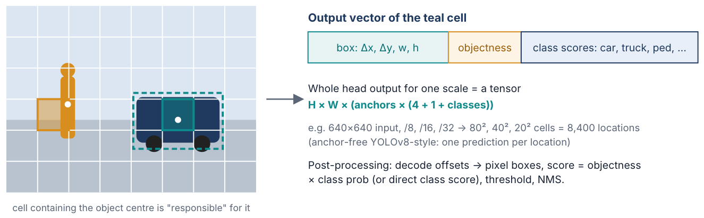
7.2SSD — Single Shot MultiBox Detector
SSD (2016) made the single-stage idea accurate by predicting from several feature maps of different resolutions, each with its own set of default boxes (anchors) sized for that scale: fine maps for small objects, coarse maps for large ones. It was one of the first detectors to be both reasonably accurate and real-time, and combined with a MobileNet backbone ("SSD-MobileNet") it became the default detector for embedded and mobile devices for years — many first-generation automotive and industrial deployments used it.
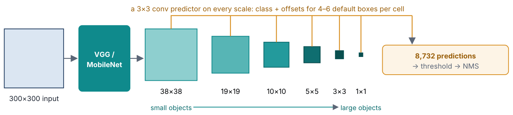
7.3RetinaNet and focal loss: fixing the imbalance problem
Single-stage detectors were long less accurate than two-stage ones. The 2017 RetinaNet paper diagnosed why: a dense detector evaluates ~100,000 anchors per image, and nearly all of them are easy background (sky, road). Each contributes a small loss, but together they swamp the few hundred anchors on real objects. Two-stage detectors avoid this because the RPN filters most background before stage 2.
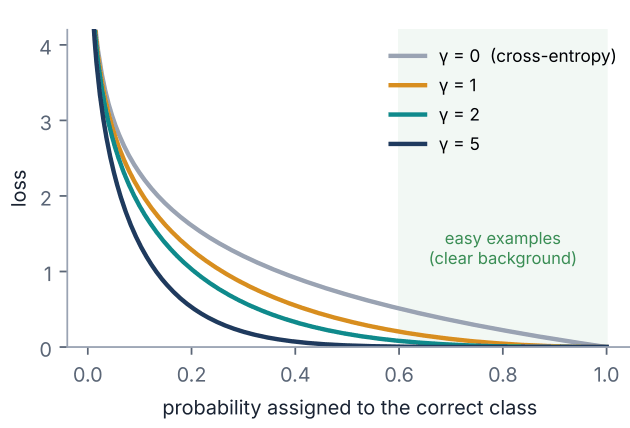
Focal loss modifies cross-entropy by multiplying it with (1 − p)γ, where p is the probability assigned to the correct class. For an easy, confidently classified example (p ≈ 0.95), the factor nearly zeroes the loss; hard, misclassified examples keep almost their full loss. Training effort automatically concentrates where it matters. With focal loss plus an FPN, RetinaNet matched two-stage accuracy at single-stage speed — and focal loss (and its successors such as varifocal and qualityfocal loss) became standard in later detectors.
7.4The YOLO family — from a bold idea to the industry default
"You Only Look Once" (2016) framed detection as a single regression problem: a 7×7 grid, each cell predicting two boxes and class probabilities, all in one network. Early versions were fast but imprecise. Through many versions — by different authors and companies — YOLO absorbed nearly every good idea in the field. The name is now a family label rather than one architecture.
| Version | Year | Main contribution |
|---|---|---|
| YOLOv1 | 2016 | Single network, grid-based regression. Real-time, but weak on small/grouped objects. |
| YOLOv2 / v3 | 2017–18 | Anchors from k-means clustering of the dataset's boxes; batch norm; Darknet-53 backbone; predictions at 3 scales (FPN-like). |
| YOLOv4 / v5 | 2020 | CSP backbone, PAN neck, mosaic augmentation, CIoU loss; v5 (Ultralytics, PyTorch) made training and export very accessible. |
| YOLOX, v6, v7 | 2021– 22 | Anchor-free heads, decoupled classification/box branches, dynamic label assignment (SimOTA), RepVGG-style re-parameterisation for fast deployment. |
| YOLOv8, v9, YOLO11 | 2023– 24 | Anchor-free decoupled head, task-aligned assignment, distribution focal loss for box edges; one framework for detection, segmentation, pose and oriented boxes. |
| YOLOv10, YOLO26 | 2024– 26 | NMS-free, end-to-end inference via one-to-one label assignment; YOLO26 (released January 2026) explicitly targets edge deployment and simpler export. |
| YOLOv12 and others | 2025 | Attention-centric variants that add efficient (area) attention into the YOLO structure. |
Anatomy of a modern YOLO
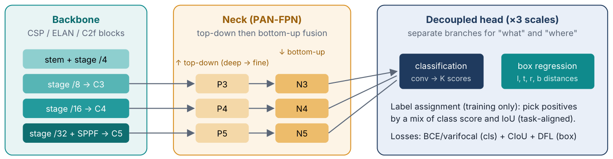
Some design choices worth understanding:
- CSP (Cross-Stage Partial) blocks split channels so only part goes through the heavy computation and part bypasses it, then merge. Fewer FLOPs, better gradient flow.
- SPPF (spatial pyramid pooling – fast) at the end of the backbone pools at several window sizes to enlarge the receptive field cheaply.
- Decoupled head: classifying "what" and regressing "where" want different features; separating them speeds convergence and improves accuracy.
- Re-parameterisation: train with multi-branch blocks (3×3 + 1×1 + identity), then mathematically merge them into a single 3×3 conv for deployment — free accuracy at inference.
- Mosaic and mix-up augmentation make the model robust to context and scale; usually switched off for the last epochs so the model also sees "normal" images.
7.5Anchor-free single-stage: FCOS and CenterNet
FCOS treats every feature-map location inside an object as a training sample: it predicts the distances to the four box edges and a centre-ness score that down-weights locations near the object border (those produce poorer boxes). Assigning objects to FPN levels by size replaces anchor matching.
CenterNet ("Objects as Points") predicts a heatmap with a peak at each object centre, plus width/height and offset at that peak. Taking local maxima of the heatmap (a 3×3 max-pool) replaces most of NMS. It extends naturally to 3D (depth, dimensions, yaw at the centre) and to tracking — making it popular in automotive research (CenterTrack, CenterPoint for lidar).
Single-stage detectors fit embedded constraints almost perfectly: fixed input size, fully convolutional, a static graph with no dynamic shapes, and latency that doesn't depend on scene content (except NMS). Typical production choices are YOLO- or CenterNet-style heads on a hardware-friendly backbone (RegNet, ResNet, efficient CSP variants), usually as one head among several on a multi-task network. Watch the licence: several popular YOLO code bases are under AGPL-3.0 or require a commercial licence — a topic for legal review before using them in a product.
A detector's score of 0.8 does not mean "80 % chance this is a pedestrian". Scores are typically miscalibrated, differ between model versions, and shift with quantization. Safety and fusion components that consume confidences should either be re-tuned per release or work on calibrated scores (e.g. temperature scaling measured on a validation set).
"Single-stage detectors like YOLO and SSD predict boxes and classes for every location of a feature map in one pass — no separate proposal step. They're fast, have predictable latency and map well onto automotive NPUs. Modern versions are anchor-free, learn which predictions should be responsible for which object, and the newest ones even avoid NMS entirely, which simplifies the post-processing on the ECU."
8DETR: detection as set prediction with transformers
DETR (DEtection TRansformer, 2020) removed the hand-crafted machinery that every earlier detector depended on: no anchors, no label-assignment heuristics, no NMS. The network directly outputs a set of objects, and training compares that set with the groundtruth set via an optimal one-to-one matching. The first version was slow to train and weak on small objects, but its successors are now among the most accurate real-time detectors, and its "object query" concept is the foundation of modern multi-camera 3D detectors.
8.1The architecture
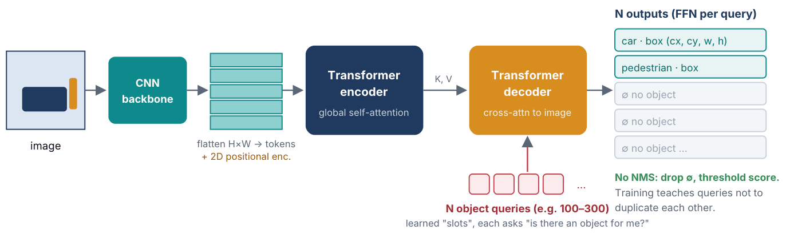
The pieces, in plain words:
- Backbone: an ordinary CNN (ResNet-50 in the original) produces a /32 feature map, which is flattened into a sequence of tokens with 2D positional encodings.
- Encoder: self-attention over all feature tokens, so every location knows about the whole scene — useful for reasoning about occlusion and duplicates.
- Object queries: a fixed set of N learned vectors. They are the conceptual successor of anchors — but learned, not hand-designed, and not tied to a grid position.
- Decoder: the queries attend to each other (self-attention — "you take the left car, I take the right one") and to the image features (cross-attention — "where is my object?"). After several layers, each query is turned by a small feed-forward network into a class (including "no object") and a box.
8.2Hungarian matching — how a set is trained
The network outputs, say, 100 predictions; the image has 3 real objects. Which prediction should be trained to match which object? DETR solves this with bipartite matching: compute a cost for every (prediction, ground-truth) pair — combining class probability, L1 box distance and GIoU — and find the one-to-one assignment with minimum total cost using the Hungarian algorithm. The three matched predictions are trained to their objects; the other 97 are trained to say "no object".
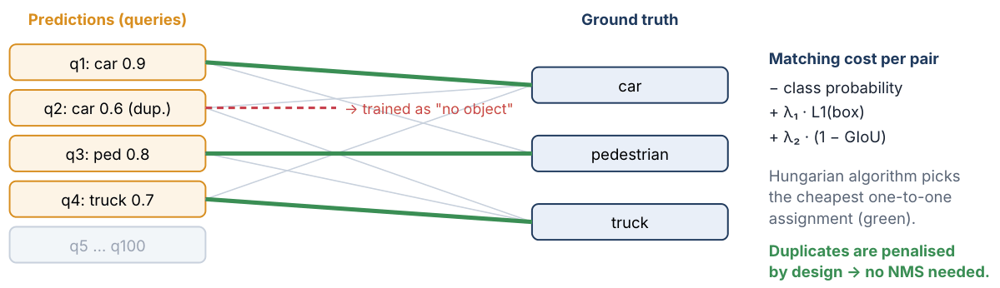
One-to-one matching gives NMS-free outputs but provides only one positive training signal per object, so training converges slowly. One-to-many assignment (classic YOLO/anchors) gives many positives and fast training but needs NMS. Several newer designs train with both: an auxiliary one-to-many head for rich supervision during training, and a one-to-one head used at inference (H-DETR, Co-DETR, YOLOv10's "consistent dual assignments"). You get fast convergence and NMS-free deployment.
8.3Problems of the original DETR — and the fixes
| Problem | Cause | Fix (successor) |
|---|---|---|
| Very slow training (≈500 epochs vs. ≈36 for Faster R- CNN) | Queries start knowing nothing about location; global attention has to learn to become sparse and focused. | Deformable DETR: each query attends only to a few learned sampling points around a reference point, across multiple scales. Converges ~10× faster. |
| Poor small-object accuracy | Only a single /32 feature map; global attention on high-res maps too expensive. | Multi-scale deformable attention; hybrid encoders. |
| Unstable matching early in training | Assignments flip between epochs. | DN-DETR / DINO: denoising training (feed noisy ground-truth boxes, learn to reconstruct them); anchor boxes as query positions (DAB-DETR). |
| Too slow for real-time | Heavy encoder on all scales. | RT-DETR (2023): efficient hybrid encoder (attention only on the coarsest level, convolutional fusion across scales), query selection; competes with YOLO on GPUs. Later real-time variants (e.g. D-FINE, RF- DETR) continue this line. |
8.4Why DETR matters for automotive
Even where a 2D DETR isn't deployed, its ideas are central to automotive perception:
- Multi-camera 3D detection (DETR3D, PETR, BEVFormer's detection head, StreamPETR): object queries live in 3D space around the vehicle; each query projects its 3D reference point into all cameras using calibration and collects features from wherever it is visible. Objects spanning two cameras are naturally handled once — no cross-camera NMS or stitching.
- Temporal reasoning: queries of the previous frame can be propagated to the next frame, giving built-in tracking (MOTR, StreamPETR) — Chapter 12.
- No NMS means simpler, deterministic post-processing — attractive for WCET and safety analysis.
Deployment questions for DETR-style models: Does the NPU compiler support the deformable-attention sampling (grid-sample / gather) efficiently? Is softmax/LayerNorm accuracy acceptable in INT8, or do those layers need FP16 islands? Is the number of queries large enough for dense scenes (parking lots, city traffic jams) — and is the latency still constant? A fixed number of queries also implies a hard upper bound on detected objects per frame; make sure requirements reflect that.
"DETR treats detection as predicting a set: a fixed number of learned 'object queries' each look into the image through attention and either claim one object or say 'nothing here'. During training, predictions are matched one-to-one to real objects, so the network learns not to produce duplicates — no anchors, no NMS. The same idea scales to 3D: queries placed around the car gather evidence from all cameras at once, which is how modern surround perception avoids stitching per-camera detections."
9Choosing a detector, and going from 2D boxes to 3D objects
No detector is "the best". The right choice depends on the target hardware, the latency budget, the object classes and distances that the function needs, and the deployment toolchain. This chapter puts the families side by side and then covers what automotive functions actually need from a camera detector: distance, size, orientation and motion in the 3D world.
9.1The families compared
| Family | Examples | Strengths | Weaknesses | Typical role |
|---|---|---|---|---|
| Two-stage | Faster / Mask /Cascade R-CNN | Precise boxes, masks, small objects | Latency, dynamic shapes, RoI ops on NPU | Offline labelling, research baselines |
| One-stage, anchor-based | SSD, RetinaNet, YOLOv3–v5 | Simple, fast, mature tooling | Anchor tuning per camera; NMS | Legacy and many current ECUs |
| One-stage, anchor-free | FCOS, CenterNet, YOLOX, YOLOv8/11 | Fewer hyperparameters; easy 3D extension (CenterNet) | NMS (unless one-toone head) | Most new embedded 2D/mono-3D detectors |
| Set prediction | DETR, Deformable DETR, DINO, RT-DETR | NMS-free; global reasoning; natural multi-camera 3D | Attention ops; training cost; INT8 care | BEV/3D multi-camera heads; high-end SoCs |
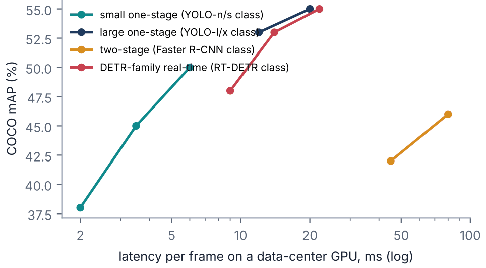
A practical decision checklist
- Start from the function. Which classes, at which distances and fields of view? What maximum latency (sensor to output) and what frame rate? What false-positive rate is tolerable (e.g. phantom braking events per 10,000 km)?
- Start from the silicon. Which operators does the NPU compiler support natively? INT8 only, or mixed INT8/FP16? How much DRAM bandwidth and SRAM? Is there a DSP/CPU budget for post-processing?
- Choose the input resolution from the smallest object that must be detected (pixels on target), not from the camera's native resolution.
- Pick the simplest architecture that meets KPIs on the target, ideally sharing a backbone with other tasks.
- Check licences and process fit: code base licence (AGPL issues), traceability of training data, and whether the toolchain supports reproducible, qualified builds.
9.2What the car needs: 3D, not pixels
An AEB function doesn't care that a pedestrian is at pixel (812, 430). It needs: how far away, where laterally, how big, which way it's heading, and how fast it's moving. A camera, however, measures directions, not distances. Getting 3D from a single image relies on additional knowledge:
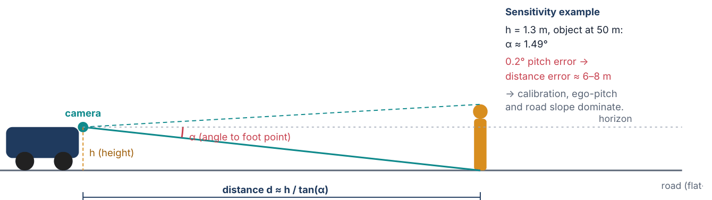
Three complementary cues are used in practice, often fused:
- Geometry (ground plane): as above. Accurate at short and medium range on flat roads; fails on hills, speed bumps, or when the foot point is occluded.
- Known size (size prior): a passenger car is ~1.5 m tall; distance ≈ focal length × real height / pixel height. Robust to slope, but varies per object (SUV vs. sports car, child vs. adult).
- Learned depth: the network directly regresses depth of the object centre (and full 3D box), having learned both cues and context from data labelled with lidar ground truth. This is the basis of monocular 3D detectors (FCOS3D, SMOKE, CenterNet-3D) and of BEV networks (Chapter 13).
The 3D bounding box
A 3D box (cuboid) in vehicle coordinates is typically described by 7 values: centre (x, y, z), dimensions (length, width, height), and yaw angle around the vertical axis — plus velocity (vx, vy) and attributes such as "parked", "moving", "door open". For yaw, networks typically predict sin/cos or a bin + residual, because predicting the angle directly has a discontinuity at ±180°. A classic subtlety: the observation angle of an object in the image differs from its yaw in the world depending on its lateral position, so the network learns the observation angle and post-processing converts it using the ray direction.
Surround-view fisheye lenses (FOV ≈ 190°) bend straight lines and objects strongly near the image edge. An upright pedestrian may appear tilted and curved, so an axis-aligned 2D box contains mostly background. Options: (1) undistort/rectify to several virtual pinhole or cylindrical views first (simple, but loses FOV and resolution at the edges); (2) detect directly on the fisheye image with oriented boxes, polygons, or curvedbox representations; (3) skip image-space boxes and predict directly in a BEV space using the calibrated fisheye projection model. Near-field use cases (parking, low-speed manoeuvring) often favour polygon/footprint or freespace-style outputs over boxes altogether.
"The detector gives us objects in the image; the function needs them in the world. We get distance from three cues — where the object touches the road given our calibrated camera geometry, how big it appears relative to its typical size, and learned depth trained with lidar ground truth. At long range small calibration errors dominate, so online calibration and pitch compensation are a direct part of perception accuracy."
9.3Reading newer architectures with the ideas of this chapter
New detectors, segmenters and backbones appear every few months, and their names change faster than their ideas. Almost every architecture from 2023 to 2026 is a recombination of the building blocks of Chapters 2 to 8: a backbone that is pretrained (more and more often self-supervised, Section 4.5), a multi-scale neck, and a head that either predicts densely and needs NMS or predicts a set and does not. Reading a new paper becomes much faster if you first ask which block it changes. The table maps the names you will meet onto those blocks; the detailed, dated treatment of each is in the perception-tasks chapter, so it is not repeated here.
| Name | What it changes | Builds on | Details |
|---|---|---|---|
| RT-DETR, D-FINE, DEIM | Real-time set prediction: attention only on the coarsest feature map, decoder queries initialised from the best encoder tokens, finer box regression as distributions. | DETR and Hungarian matching (Chapter 8), FPN (2.5) | Perception tasks 2.2 |
| YOLOv10, YOLO11, YOLO26 | Dense heads trained with an extra one-to-one head so inference needs no NMS; simpler export. | YOLO anatomy (7.4), label assignment, NMS (5.5, 5.7) | Perception tasks 2.3 |
| DINOv2, DINOv3 | Self-supervised ViT backbones whose frozen features serve many tasks with a light head. | ViT (4.1), self-distillation and masking (4.5) | Landmark papers 9.9 |
| SAM, SAM 2, SAM 3 | Segmentation from a prompt (click, box, text); a heavy image encoder runs once, a light prompt decoder runs per prompt; SAM 2 adds a memory for video. | ViT encoder (4.1), mask decoders (10.2), cross-attention (3.2) | Perception tasks 4.2 |
| Mask2Former and successors | One query-based head for semantic, instance and panoptic segmentation. | DETR queries (8.1), FPN-style pixel decoder (2.5) | Perception tasks 4.1 |
| Depth Anything V2 | Relative depth from a DINOv2 encoder with a dense decoder, trained on pseudo-labels from a large teacher. | Self-supervised backbones (4.5), depth training (11.2) | Perception tasks 7.3 |
| Grounding DINO, YOLO-World, YOLOE | Detection with an open vocabulary: class names come from a text encoder instead of a fixed output layer. | Detection heads (Chapters 6 to 8), CLIP-style text-image embeddings | Perception tasks 10.1 |
"Most new architectures change one block: the backbone is pretrained differently, the head predicts a set instead of dense boxes, or the classes come from text. Before adopting one, we check what it changes on our target: which operators it adds, whether it removes NMS, how its latency scales with resolution, and whether the gain survives on our cameras and our long-tail scenarios rather than on COCO."
10Segmentation: understanding every pixel
Boxes are perfect for countable objects with a clear extent. But many things a vehicle must understand have no meaningful box: the drivable road surface, curbs, lane markings, parking-slot lines, vegetation, the shape of an irregular obstacle. Segmentation assigns a label to every pixel and is the natural representation for these "stuff" classes and for precise object shapes.
10.1Three flavours
- Semantic segmentation: one class per pixel (road, sidewalk, car, person, sky…). Two touching cars become one "car" blob.
- Instance segmentation: a separate mask per object instance, only for countable "things".
- Panoptic segmentation: the union — every pixel gets a class, and pixels of "things" also get an instance ID. The most complete 2D description of a scene.
10.2Encoder–decoder: shrink to understand, grow back to localise
A segmentation network must output a map as large as the input (or at least /4 of it), but understanding the scene requires the deep, low-resolution features of a backbone. The universal answer is the encoder– decoder. The encoder is a normal backbone. The decoder upsamples step by step back towards full resolution, and skip connections bring in the fine spatial detail from early encoder layers that was lost during downsampling. U-Net (2015, originally for medical images) is the textbook example; its U-shape gave the pattern its name.
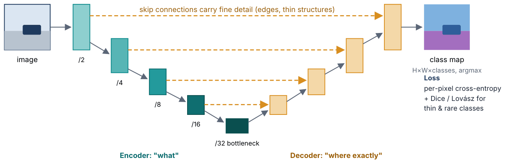
Dilated (atrous) convolutions and ASPP — the DeepLab idea
Instead of shrinking the image a lot and growing it back, the DeepLab family keeps the feature map at a moderate resolution (/8 or /16) and enlarges the receptive field with dilated convolutions: a 3×3 kernel whose taps are spread apart (dilation 2, 4, 8…), so it covers a large area with the same 9 weights. ASPP (Atrous Spatial Pyramid Pooling) runs several dilation rates in parallel and concatenates the results, capturing context at multiple scales — a road needs wide context, a pole needs detail. DeepLabv3+ adds a light decoder and remains a strong, deployable baseline.
From masks to queries: Mask2Former and "universal" segmentation
Following DETR, mask-classification models such as MaskFormer/Mask2Former predict a set of N (mask, class) pairs using object queries. One architecture handles semantic, instance and panoptic segmentation. Their accuracy is excellent; their cost and transformer operators put them mostly in offline tooling or highend platforms today, with distilled CNN decoders in the car.
10.3How segmentation is used in automotive
| Function | What is segmented | Notes |
|---|---|---|
| Free space / drivable area | Road vs. non-drivable per pixel, often reduced to a boundary per image column ("stixels", free-space contour). | Generic obstacle detection: anything that is not road, even an unknown object class, limits free space — an important SOTIF argument against "unknown unknowns". |
| Lanes and road markings | Lane lines, arrows, stop lines, crosswalks. | Pure pixel segmentation needs postprocessing to fit lines; specialised heads predict lane instances as curves or rowwise positions (row-anchor methods) for speed. |
| Parking | Parking-slot lines, slot corners/entry points, curbs, wheel stoppers — often on fisheye or stitched top-view images. | Many slot detectors predict keypoints (slot corners) plus line direction and slot type, then assemble slots geometrically; segmentation helps with occupancy and curbs. |
| Surround-view rendering | Ground vs. 3D objects. | Helps the 3D surround view stitch correctly and avoid "smeared" obstacles on the bowl projection. |
| Camera health | Soiling, water drops, frost, glare per region. | Feeds degradation management — functions are reduced when the lens is blocked (a SOTIF-relevant monitor). |
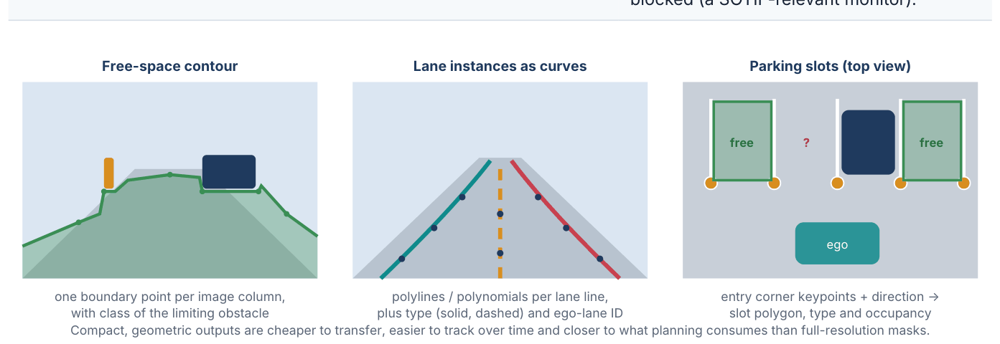
10.4Measuring segmentation: mIoU
For each class, IoU = correctly labelled pixels / (pixels labelled as that class ∪ pixels truly of that class). mIoU averages over classes. Because big classes (road, sky) are easy, mIoU can hide failures on thin, safety-relevant classes; report per-class IoU, and for boundaries use boundary-based metrics (e.g. freespace boundary error in centimetres in the vehicle frame, per distance band). For instance and panoptic segmentation, mask AP and PQ (panoptic quality) are used.
Full-resolution segmentation is memory-hungry: the output alone for a 1920×1080 image with 20 classes is 41 M values per frame. Production heads therefore output at /4 or /8, output a class index instead of all logits (argmax on the NPU), or output compact representations (free-space contour per column, lane polylines, slot corner points). The decoder's upsampling layers and the large activation maps often cost more DRAM bandwidth than the backbone itself.
"Segmentation labels every pixel. We use it for things that don't have a natural box — the drivable road, curbs, lane markings, parking-slot lines — and as a generic obstacle cue: anything that isn't road reduces free space, even if the network has never seen that object type. Architecturally it's an encoder that understands the scene and a decoder that restores resolution, with skip connections to keep edges sharp."
10.5Keypoints and pose: dense heatmaps that end in a few points
Some questions are not answered by a box or a mask but by a handful of points. Is the pedestrian at the kerb facing the road or walking along it? Which way is the cyclist's arm pointing? Where exactly do the wheels of the parked car touch the ground, so a single camera can place its 3D box? Where are the four corners of a parking slot? Where are the driver's eyes and shoulders (In-cabin sensing 3.3 and 6.2)? A keypoint network answers all of these with the same machinery: for each of K named points (17 body joints in the COCO convention, for example) it predicts where that point is, and whether it is visible.
Regress the coordinates, or paint a heatmap?
The direct approach is to regress the 2K coordinates with a fully connected layer at the end of a backbone (DeepPose, 2014). It is simple and cheap, but it trains poorly: the network has to turn "there is an elbow in this part of the feature map" into an absolute number, which throws away the translation equivariance that makes convolutions work. The approach that took over instead treats each keypoint like a tiny segmentation problem. The network outputs K heatmaps, one per keypoint, at a fraction of the input resolution, and is trained to paint a small Gaussian blob (σ of about 2 heatmap cells) at the true location. The location is read off afterwards as the peak. This is a dense prediction, just like a segmentation mask, so it reuses the same encoder-decoder or high-resolution designs as Section 10.2: SimpleBaseline (2018) added a few transposed convolutions to a ResNet, HRNet (2019) keeps a high-resolution branch through the whole network and exchanges information with lower-resolution branches, ViTPose (2022) uses a plain ViT encoder with a light decoder.
The price of heatmaps: the peak sits on a grid
A heatmap at stride 4 has one cell per 4 × 4 input pixels, so the plain argmax can only land on a cell centre. We measured what that costs (experiments/keypoint_decoding.py): with a Gaussian target of σ = 2 cells on a 256 × 192 input and a little output noise, as a trained network would produce, the argmax is off by 1.6 input pixels on average at stride 4 and by 3.3 pixels at stride 8. The classic fix shifts the peak a quarter cell towards the higher neighbour, which halves the error (0.9 and 1.8 pixels). Fitting a second-order Taylor expansion to the log-heatmap around the peak (DARK, Zhang et al., 2020) uses the shape of the blob to find its true centre and gets down to 0.4 and 0.9 pixels. For a pedestrian 100 pixels tall the forearm is about 15 pixels long, so a 3-pixel error is more than 10 degrees of limb angle, enough to matter for an intention estimate.
| Decoding (σ = 2 cells, small output noise) | Mean error, stride 4 | Mean error, stride 8 |
|---|---|---|
| Argmax of the heatmap | 1.62 px | 3.25 px |
| Quarter-cell shift towards the higher neighbour | 0.88 px | 1.75 px |
| Taylor refinement on the log heatmap (DARK-style) | 0.43 px | 0.85 px |
The heatmap's memory is the other cost: K maps at a quarter of the input resolution are large tensors to write and read, which is the expensive operation on an NPU. SimCC (2022) and RTMPose (2023) replace each 2D heatmap by two 1D classifications, one over x positions and one over y positions, each at finer than pixel resolution. That keeps the "classify a location" training signal of heatmaps while making the output small and the decoding trivial, which is why RTMPose-style models are common on embedded targets.
Many people: top-down, bottom-up or one stage
With several people in the image the network must also decide which keypoints belong to whom. Figure 10.3 compares the three answers. Top-down methods run a person detector first, crop and resize each person to a fixed size, and run the single-person pose network on each crop. Accuracy is the best because every person is seen at the same scale, but the cost grows linearly with the number of people, and a missed detection means a missed pose. Bottom-up methods (OpenPose, 2017) predict all keypoints of all people in one pass, plus grouping cues: OpenPose predicts part affinity fields, small vector fields along each limb that say "this elbow connects to that wrist", and assembles skeletons by graph matching. The network cost is constant, but grouping breaks down when people overlap. One-stage methods extend a YOLO-style detector head: each anchor point predicts a box and K keypoint offsets, so grouping comes for free and the whole thing is one network plus box NMS, at the price of coarser points. Embedded pedestrian pipelines usually choose one-stage, or top-down only for the few most relevant people.
Measuring keypoints
A pixel error means different things for a person close to the camera and one far away, and some joints (hips) are harder to place than others (eyes). COCO's object keypoint similarity (OKS) normalises for both: \(\mathrm{OKS} = \frac{\sum_i \exp(-d_i^2 / (2 s^2 k_i^2))\, \delta(v_i > 0)}{\sum_i \delta(v_i > 0)}\), where \(d_i\) is the error of keypoint \(i\), \(s\) is the object's scale (square root of its area), \(k_i\) is a per-keypoint constant measured from how much human annotators disagree, and only labelled keypoints count. OKS plays the role IoU plays for boxes, and AP over OKS thresholds is computed exactly as box AP (Section 5.6). PCK, the percentage of keypoints within a fraction of the head or torso size, is an older and simpler metric still used for single-person benchmarks.
Horizontal flip is a standard augmentation for pose, but a flipped image turns a left wrist into a right wrist. The labels must be swapped with the image, and test-time flip averaging must flip the heatmaps back and swap the channels; forgetting this is a classic bug that shows up as left-right swaps in the error analysis rather than as an obvious collapse of the overall score.
11Depth estimation: adding the third dimension
A camera projects a 3D world onto a 2D sensor and throws distance away. Depth estimation tries to recover it — for every pixel. Dense depth enables generic obstacle detection, 3D surround reconstruction, better BEV features and parking manoeuvres close to walls and pillars. It is also one of the clearest examples of how deep learning can learn from data without manual labels.
11.1Stereo vs. monocular
Stereo uses two cameras a known distance apart (the baseline b). A point appears shifted between the two images by the disparity d; depth Z = f·b / d. It's geometry, so depth is metric and reliable where matching works. Networks are used to compute the matching robustly (cost volumes, RAFT-Stereo style). Weaknesses: needs two calibrated cameras with very stable relative pose; precision falls with the square of distance; textureless surfaces and repetitive patterns confuse matching.
Monocular depth uses one camera and learned cues: perspective (parallel lines converging), known object sizes, texture gradients, occlusion order, height in the image, shading. Mathematically a single image is ambiguous — a toy car close by and a real car far away can produce identical pixels — so monocular depth is a learned best guess. Its strength: works with the cameras the car already has, including fisheyes.
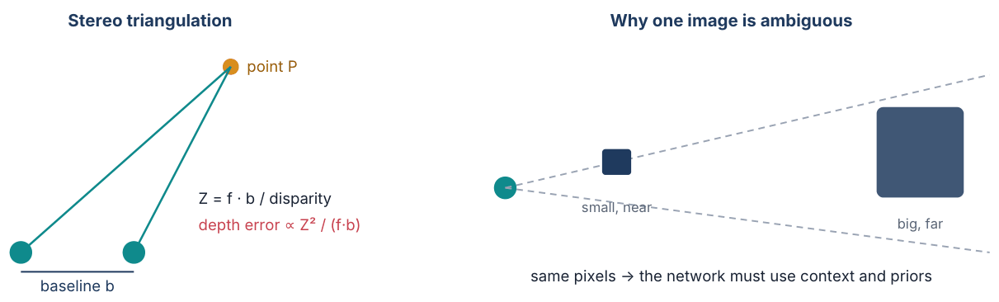
11.2How monocular depth networks are trained
The architecture is simply an encoder–decoder (Chapter 10) that outputs one value per pixel instead of a class. The interesting part is the supervision:
Supervised with lidar
Project lidar points into the camera image and train the network to predict the depth at those pixels. Gives metric depth, but lidar is sparse (a few percent of pixels have a value), has a different field of view and mounting position, and requires precise camera–lidar calibration and time synchronisation — misalignment becomes label noise, worst at object edges.
Self-supervised from video — learning depth without labels
This is one of the most elegant ideas in vision. If you know the depth of every pixel in frame t and how the camera moved between frame t and t+1, you can predict what frame t+1 should look like by re-projecting the pixels. Train two networks — one predicting depth, one predicting the camera motion — and judge them only by how well the synthesised image matches the real next frame. Good depth and pose are the only way to make the reconstruction work.
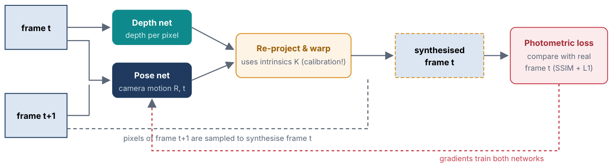
The method assumes a static world. A car driving at the same speed as the ego vehicle doesn't move in the image, so the photometric loss is happiest if that car is predicted infinitely far away — a classic failure ("holes" in depth at lead vehicles). Reflections, glass, rain on the lens, low texture (white walls in parking garages) and over-exposed areas also violate the assumptions. Practical systems add auto-masking of static pixels, semantic masks for movable objects, and some supervised signal to anchor the scale.
Relative vs. metric depth and foundation models
Models trained on mixed internet data (MiDaS, Depth Anything v1/v2) predict relative (affine-invariant) depth: correct ordering and shape, unknown scale and shift. Newer models (Metric3D, UniDepth, Depth Anything metric variants) predict metric depth by also reasoning about camera intrinsics. For automotive use, the camera is fixed and calibrated, so a network trained or fine-tuned on that exact camera model learns metric scale directly — and foundation models serve mainly as teachers or pseudo-labelers.
11.3Measuring depth
| Metric | Definition | Intuition |
|---|---|---|
| AbsRel | mean(|pred − gt| / gt) | Average relative error — 0.08 means 8 % (i.e. ±4 m at 50 m). |
| RMSE | √ mean((pred − gt)²) | Dominated by large errors at long range. |
| δ < 1.25 | % of pixels with max(pred/gt, gt/pred) < 1.25 | "How often are we within 25 %?" — higher is better. |
For a function, per-pixel averages matter less than errors on obstacles and near the ego path, broken down by distance band — the same lesson as with mAP.
Typical uses: near-field 3D for parking (distance to pillars, walls and curbs from fisheye cameras, complementing ultrasonics), generic obstacle detection (anything sticking out of the ground plane), improving the 3D surround view (adapting the projection bowl to real obstacle distances), and — inside BEV networks — as an intermediate "depth distribution" per pixel used to lift image features into 3D (Chapter 13). Depth for fisheye images is often predicted as distance along the ray ("radial distance") rather than Z-depth, which is ill-defined beyond 90°.
"A single camera can't measure distance directly, so monocular depth networks learn it from cues like perspective and object size. A neat trick is self-supervision: the network predicts depth and camera motion, re-renders the next video frame, and learns from how well that matches — no manual labels. We anchor the scale with vehicle odometry or lidar, and use depth for parking, generic obstacles and building the 3D bird'seye view."
12Multi-object tracking: from detections to objects with a history
A detector looks at each frame on its own. It has no memory: a pedestrian detected in frame 100 and frame 101 is, as far as it knows, two unrelated boxes. Functions need more — a stable identity for each object, a velocity, a predicted path, and the ability to "keep" an object for a moment when it is briefly occluded or missed. That is the job of tracking.
12.1Why tracking matters
- Velocity and prediction: time-to-collision, crossing intention and path prediction all require positions over time.
- Smoothing: per-frame boxes jitter by a few pixels; filtering produces stable positions — vital for distance estimates at long range.
- Robustness: a single missed detection (motion blur, partial occlusion) shouldn't make the object vanish; a single-frame ghost detection shouldn't trigger a brake. Tracks require confirmation over several frames and can coast through short gaps.
- Identity: downstream logic ("this is the same cyclist we've been watching for 2 seconds") depends on stable IDs.
12.2Tracking-by-detection: the standard loop
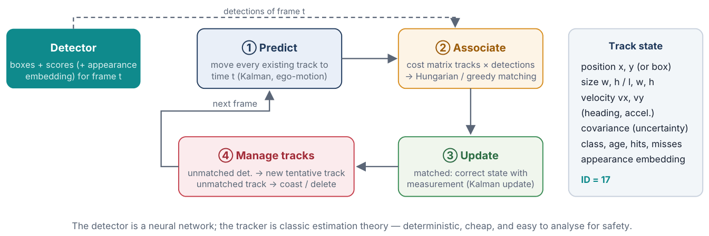
① Prediction with a Kalman filter
A Kalman filter keeps, for each track, a best estimate of its state (e.g. position and velocity) plus an uncertainty (covariance). Each frame it does two things: predict — move the state forward using a motion model (typically constant velocity) and grow the uncertainty because time has passed; update — when a matching detection arrives, blend prediction and measurement, weighting each by how much it can be trusted, and shrink the uncertainty. A noisy detector gets less weight; a long-unseen track gets wide uncertainty. In the vehicle, prediction also has to compensate for ego-motion — the car itself moving and turning — using odometry, or every static object appears to move.
② Association: who is who?
Build a cost matrix with one row per predicted track and one column per detection. Costs can be:
- 1 − IoU between predicted box and detection (SORT) — great at high frame rates when objects move little between frames.
- Mahalanobis distance — distance scaled by the track's uncertainty; also used for gating (forbidding implausible matches).
- Appearance similarity — the detector or a small re-identification (ReID) network outputs an embedding vector per object; cosine distance between embeddings helps re-identify objects after occlusion (DeepSORT, FairMOT).
- In 3D tracking: Euclidean distance between centres in the vehicle frame.
The Hungarian algorithm (the same one used in DETR training) finds the minimum-cost one-to-one assignment; pairs above a threshold are rejected.
Most trackers throw away low-confidence detections before association. But an occluded or blurred pedestrian often still produces a weak detection (say 0.2). ByteTrack (2022) first matches tracks with highscore detections, then tries to match the remaining tracks with low-score detections. Since a low-score box that lines up with an existing track is very likely real, this recovers objects through occlusion without letting ghost detections start new tracks. A small change, a large gain — and a nice example of how the detector's threshold and the tracker must be tuned together.
④ Track management: the life of a track
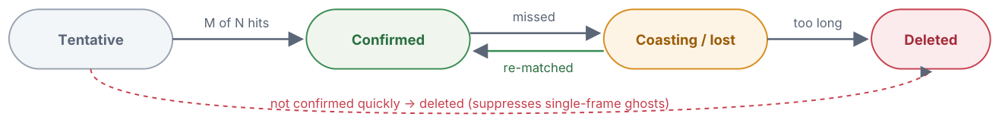
12.3Beyond tracking-by-detection
- Joint detection and tracking: CenterTrack feeds the previous frame and previous heatmap into the network, which predicts each object's displacement directly. FairMOT outputs detections and ReID embeddings in one network.
- Query-based tracking: in DETR-style models, a query that found an object in frame t is carried into frame t+1 as a "track query" and keeps following the same object (MOTR, StreamPETR in 3D). Identity is maintained inside the network.
- Temporal feature fusion: BEV networks warp the previous BEV feature map by ego-motion and fuse it with the current one, so the network itself sees motion and can predict velocity — reducing the tracker's job.
12.4Measuring tracking
| Metric | What it captures |
|---|---|
| MOTA | Combines misses, false positives and identity switches into one number; dominated by detection quality. |
| IDF1 | How consistently the correct ID is kept over the whole trajectory. |
| HOTA | Balanced combination of detection accuracy and association accuracy; now the preferred benchmark metric. |
| ID switches, | Raw counts — easy to explain to non-specialists. |
| fragmentations | |
| Function-level | Time to confirmed track, velocity error, track loss during occlusion, latency — what the downstream function actually experiences. |
In production, camera tracking is often merged with sensor fusion: camera objects, radar objects and possibly ultrasonics feed one tracker in vehicle coordinates (with ego-motion from odometry/IMU). Timestamps matter enormously — a 50 ms error in a camera timestamp at 30 m/s relative speed is 1.5 m of position error. Ensure each detection carries the exposure timestamp (mid-exposure for rolling-shutter sensors), not the time the NPU finished.
"The neural network detects objects frame by frame; the tracker turns them into objects with identities, velocities and history. It predicts where each known object should be, matches new detections to those predictions, updates the estimates and manages the life of each track. That smooths noise, bridges short occlusions, filters one-frame ghost detections and gives the function velocity and time-to-collision."
13Multi-camera perception: BEV, occupancy and multi-task networks
A modern vehicle carries 6–12 cameras: front narrow and wide, side and rear cameras, four surround-view fisheyes. Planning and control don't think in pixels of camera 3; they think in a top-down map around the vehicle. Bird's-eye-view (BEV) networks produce that map directly from all cameras at once. They are the biggest architectural shift in automotive perception of the last years.
13.1Why BEV?
The traditional approach — late fusion — runs a detector per camera, converts each detection to 3D with its own depth estimate, and then merges objects across cameras in a fusion module. Problems: an object straddling two cameras is detected twice with inconsistent distances; each camera's monocular depth errors are fused after the fact; per-camera post-processing multiplies.
BEV fusion moves the fusion into the network: features from all cameras are projected into one shared topdown grid (e.g. 200×200 cells of 0.5 m around the car), and detection, segmentation and map heads operate on that grid. Objects are represented once, in the coordinate frame that planning uses; multi-camera overlap becomes an advantage rather than a problem; temporal fusion becomes easy (warp the previous BEV map by ego-motion and stack it).
13.2The core challenge: lifting 2D features into 3D
Each pixel corresponds to a ray in 3D, but we don't know how far along the ray the content is. Three families of solutions:
a) Inverse perspective mapping (IPM) — the classical approach
Assume everything lies on a flat ground plane. Then a pixel maps to exactly one ground point via a homography computed from calibration. This is what classic 360° surround-view systems do to produce the top-view image. It's perfect for road markings and parking lines, but anything above the ground (cars, pedestrians) gets smeared and stretched along the ray.
b) Lift–Splat (LSS, BEVDet, BEVDepth) — predict depth, then project
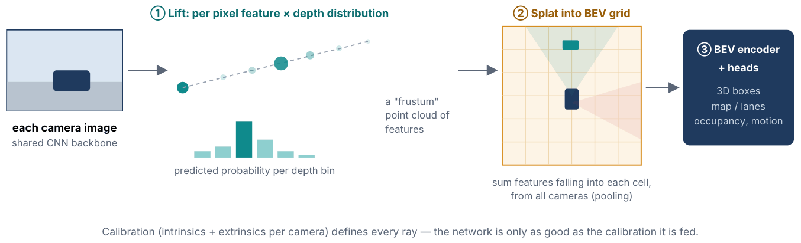
c) Query-based (BEVFormer, DETR3D, PETR) — let the BEV ask the images
Here the direction is reversed. Each BEV cell (or each 3D object query) has a known 3D position. It projects a few reference points at several heights into whichever cameras see that location, and uses (deformable) cross-attention to sample image features there. Temporal self-attention additionally lets each cell look at the previous BEV map (aligned by ego-motion). No explicit depth is predicted; the network learns to pick the right features. This "backward projection" handles overlapping cameras elegantly but relies on gather/sampling operators that are expensive on some NPUs.
| Approach | Pros | Cons | Embedded note |
|---|---|---|---|
| IPM | No learning, exact for ground | 3D objects distorted | Trivial: a remap/LUT |
| Lift–Splat | Explicit depth, interpretable | Depth errors smear features | "Splat" = scatter/voxel pooling; often needs custom kernel |
| Query / attention | Strong accuracy, temporal fusion | Heavier; training harder | Deformable attention = grid-sample; check support |
In BEV networks, camera intrinsics and extrinsics are no longer only used in post-processing; they define the geometry of the network's internal feature transformation. A wrong yaw or pitch on one camera makes its features land in the wrong BEV cells. Robust systems therefore train with calibration perturbations (augmentation), use online calibration (targetless, from lane lines and motion) to keep extrinsics current, and monitor calibration quality as a health signal.
13.3Occupancy networks — beyond boxes
Boxes assume objects are cuboids of known classes. Real roads contain trailers with overhanging loads, construction equipment, fallen trees, open doors and debris. Occupancy networks predict, for a 3D voxel grid around the vehicle (e.g. 0.2–0.5 m voxels), whether each voxel is occupied — and optionally its semantic class and motion (occupancy flow). Free space becomes the complement of occupied space. This generic representation was popularised by Tesla in 2022 and is now an active research and product direction (benchmarks like Occ3D build on nuScenes and Waymo data).
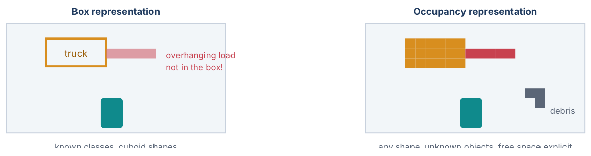
13.4Vectorised maps and lanes
Instead of relying only on HD maps, BEV networks can predict the local road structure online: lane dividers, road boundaries, crosswalks — as polylines (vectors) rather than pixel masks. Query-based map heads (HDMapNet, MapTR family) output sets of polylines, again with DETR-style matching. This is the perception counterpart of the industry's move toward "HD-map-light" driving.
13.5One network, many tasks (multi-task learning)
Running a separate network per task would exceed any automotive compute budget. Production perception is therefore a multi-task network: one shared backbone (and often a shared BEV encoder) with many lightweight heads — objects, lanes, free space, traffic signs, lights, depth, occupancy. Tesla's widely publicised "HydraNet" is the archetype, but the pattern is universal.
- Benefits: compute shared; tasks can help each other (depth helps detection; segmentation helps free space).
- Challenges: tasks compete during training (loss balancing, gradient conflicts); one head's improvement can degrade another; release management is harder — retraining the backbone means re-validating every function. Some teams freeze the backbone and fine-tune heads per release; others retrain everything with a full regression suite.
Where BEV is a fit: L2+/L3 functions with 6+ cameras and a capable SoC (tens to hundreds of TOPS), where cross-camera consistency and temporal fusion pay off. For cost-sensitive L1/L2 front-camera systems and for surround-view parking on mid-range SoCs, per-camera networks plus classical geometric fusion (or IPMbased top-view networks for parking) are still very common. Many programs also adopt a hybrid: per-camera 2D heads for latency-critical, well-understood functions (AEB pedestrian), BEV for global scene understanding.
"Instead of detecting objects in each camera and stitching the results afterwards, a BEV network combines the features of all cameras into one top-down map around the car, using the calibration to know which pixel looks where. Detection, lanes, free space and occupancy are then predicted directly in the vehicle coordinate frame, consistently across cameras and over time. Occupancy goes further and predicts which 3D space is blocked, independent of object class — useful for unknown obstacles."
14Running networks on automotive embedded hardware
A model that reaches great accuracy in PyTorch on a data-center GPU is only the start. It must run within a few milliseconds, in a few watts, in INT8 arithmetic, on an accelerator with its own operator set and memory limits — deterministically, every frame, for 15 years, under automotive temperature ranges. This chapter covers what happens between "the model is trained" and "the model runs in the car".
14.1The deployment pipeline
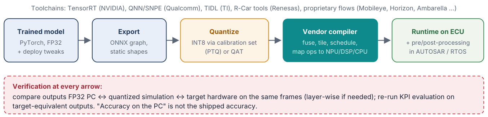
What the compiler does
- Graph optimisation: fold BatchNorm into convolution weights; fuse conv + bias + ReLU into one kernel; remove no-ops; constant-fold.
- Operator mapping: place each layer on NPU, DSP, GPU or CPU. An unsupported operator in the middle of the graph forces a "fallback" to the CPU with costly data transfers — one exotic activation can halve throughput.
- Tiling and scheduling: split large feature maps into tiles that fit in on-chip SRAM, and order computations to minimise DRAM traffic.
The cheapest moment to choose operators is before training. Teams that train first and "port later" routinely discover unsupported layers (e.g. certain upsampling modes, GELU, LayerNorm, dynamic reshapes, gridsample) and have to retrain. A deployability check — export, compile and run a randomly initialised version of the candidate architecture on the target — should be the first milestone of any new model.
14.2Quantization: from 32-bit floats to 8-bit integers
Training uses 32-bit (or 16-bit) floating point. Automotive NPUs are built for 8-bit integer arithmetic: an INT8 multiply-accumulate unit is many times smaller and more energy-efficient than an FP32 one, and INT8 weights and activations need 4× less memory and bandwidth. Quantization maps each tensor's real values to 256 integer levels with a scale (and sometimes a zero point): real ≈ scale × (int − zero_point).
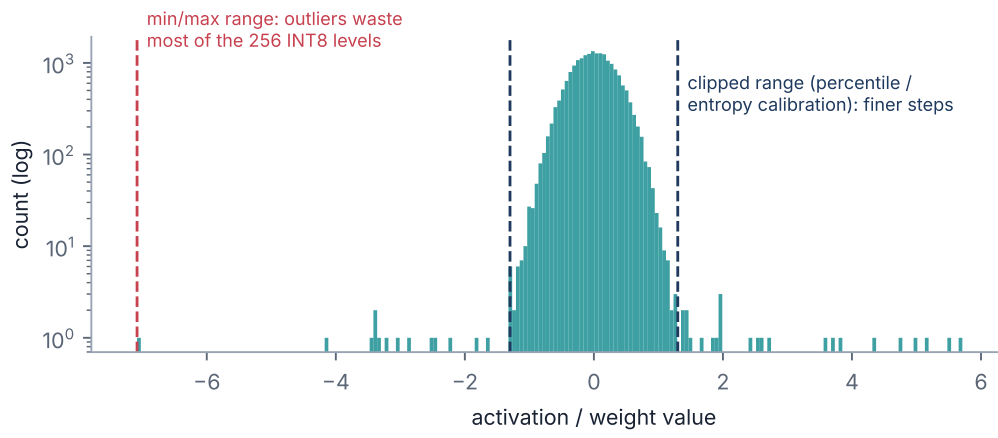
| Technique | How | When |
|---|---|---|
| Post-training quantization (PTQ) | Run a few hundred representative images through the FP32 model, record value ranges, choose scales. No retraining. | First attempt; often within ~1 % of FP32 for CNN detectors. |
| Quantization-aware training (QAT) | Simulate INT8 rounding in the forward pass during fine-tuning so the weights adapt to it. | When PTQ loses too much (small models, transformers, regression outputs like depth). |
| Per-channel weights | Separate scale for each output channel of a conv. | Almost always — big accuracy gain for little cost. |
| Mixed precision | Keep sensitive layers (first conv, final regression heads, softmax/LayerNorm) in INT16/FP16. | When a few layers cause most of the error. |
If the calibration images are all daytime highway scenes, activation ranges are tuned for daylight; at night or in tunnels the network may clip or lose resolution exactly where it matters. The calibration set should cover the operational design domain (night, rain, low sun, tunnels, snow) and be versioned and traceable like training data. Always evaluate the quantized model per scenario, not just overall mAP.
14.3Making models smaller and faster
- Knowledge distillation: train a small "student" to imitate a large "teacher" — its outputs and sometimes intermediate features. The student often beats the same small model trained on labels alone. This is how foundation-model knowledge reaches the ECU.
- Pruning: remove channels or blocks that contribute little. Structured pruning (whole channels) gives real speed-ups on NPUs; unstructured sparsity (random zero weights) only helps on hardware with explicit sparsity support.
- Hardware-aware NAS: automatic search for the most accurate architecture under a latency constraint measured on the chip.
- Resolution and ROI strategy: often the biggest lever — run full field-of-view at low resolution plus a highresolution crop around the horizon/ego lane for distant objects.
14.4Where the time goes: latency budget
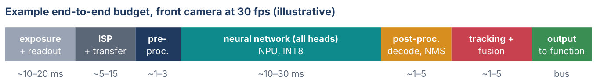
TOPS are not frames per second
Accelerators are marketed in TOPS (tera-operations per second, usually INT8, sometimes counting sparsity). Real throughput depends on utilisation, i.e. on how well the layers match the hardware and on memory bandwidth. Many vision layers — depthwise convs, upsampling, large high-resolution early layers, attention gathers — are memory-bound: the compute units wait for data. Utilisation ranges from well over 50 % for dense convolutions to single digits for awkward operators, so compare platforms by measured latency of your network family, never by TOPS alone.
14.5The camera side: pre-processing and the ISP
- Colour format: cameras deliver YUV (NV12) from the ISP; networks usually train on RGB. Convert in hardware, or train directly on YUV and save a step.
- Resize, crop, undistort are best done by hardware blocks (warp engines, LDC units) with LUTs from calibration; mean/std normalisation folds into the first conv.
- Training/inference mismatch: different resize filters, chroma upsampling or JPEG-compressed training images create subtle domain shifts.
The network learns the statistics of the images it was trained on: the ISP's tone mapping, noise reduction, sharpening, HDR merge and colour processing. Change the ISP tuning, the sensor, or the lens, and the input distribution shifts — sometimes enough to cost several points of recall at night. Treat ISP tuning versions as configuration items of the perception release, evaluate on recordings processed with the production ISP, and record RAW data so it can be re-processed with new tunings. Research also explores networks fed with RAW data — an "ISP for machines" rather than for human viewing.
14.6Typical automotive compute platforms
Common families (check current datasheets): NVIDIA DRIVE (Orin, Thor) — GPU + DL accelerators, strong for transformer/BEV workloads; Qualcomm Snapdragon Ride — Hexagon NPUs; Mobileye EyeQ — vertically integrated vision SoCs; TI Jacinto (TDA4) — cost-efficient ADAS/parking SoCs; Renesas R-Car (e.g. V4H); Ambarella, Horizon Robotics and others. Performance spans single-digit TOPS (front camera, parking) to hundreds and beyond (central L2+/L3 compute).
"To run the trained model in the car we convert it to 8-bit integers and compile it for the specific accelerator: four times smaller and far more efficient, at a small accuracy cost that we validate on the target and per scenario — night, rain, tunnels. We pick operators the chip supports from day one, and we treat ISP tuning and calibration data as part of the model's configuration."
15Data, evaluation and safety: making perception production-grade
In deep learning, behaviour is defined by data rather than code. That moves the centre of gravity of an automotive perception project: the dataset, its annotation, its coverage of the operational design domain, and the evidence that the trained network is good enough become the main engineering — and safety — work products.
15.1The data engine
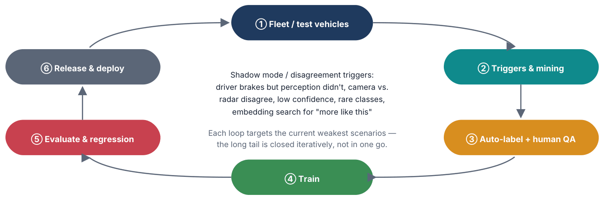
Annotation: the hidden specification
Labelling guidelines are effectively the requirements specification of a neural network. Questions that sound trivial decide what the network learns: Is a person on a bicycle a "pedestrian" or "cyclist"? Is a reflection of a car in a shop window a car? How far must an object be visible to be labelled? Where does a box end for a truck with a trailer? Ambiguous or inconsistent guidelines produce label noise, which caps achievable accuracy and makes metrics unreliable. Good practice includes occlusion/truncation attributes, "ignore regions" for unlabelable areas, a versioned taxonomy, measured inter-annotator agreement, and QA sampling. Increasingly, large offline models (Chapter 4) pre-label data, and humans correct — which is faster but risks inheriting the teacher's systematic errors.
Coverage, the long tail, and synthetic data
The dataset must cover the ODD — operational design domain: countries, road types, weather, light, camera variants, vehicle loading. Average performance is dominated by common scenes; safety is dominated by rare ones (a person lying on the road, a wheelchair, animals, unusual vehicles, low sun into the camera). Synthetic data from simulators (CARLA, game-engine based tools, neural reconstruction such as NeRF/Gaussian splatting) can produce rare and dangerous scenarios on demand with perfect labels. The catch is the domain gap: rendered images differ statistically from real ISP output. Synthetic data works best mixed with real data, for specific gaps, with careful sensor modelling (lens, noise, ISP).
15.2Evaluation that convinces engineers, managers and assessors
- Slice everything: report KPIs per class × distance band × ODD condition (day/night/rain/tunnel) × camera × region of interest. A single global number hides regressions.
- Function-level KPIs: per-image metrics must be translated into what the function experiences — detection latency, track stability, distance/velocity error, false-positive events per hour.
- Regression suites: a fixed, versioned set of "golden" scenarios (including every past field issue) that each new release must pass.
- Open-loop vs. closed-loop: replaying recordings (open-loop, re-simulation/SIL) is the workhorse; closed-loop simulation and HIL test the reaction to the vehicle's own actions.
- Statistical confidence: to claim a miss rate below 1 in 10,000 you need far more than 10,000 relevant examples. Plan evaluation dataset sizes from the claims you want to make.
15.3Safety standards and ML
Neural networks challenge classic safety engineering: there is no line-by-line specification, behaviour on unseen inputs isn't guaranteed, and testing can't be exhaustive. The standards landscape has evolved to address this:
| Standard | Focus | Relevance for ML perception |
|---|---|---|
| ISO 26262 | Functional safety: hazards from malfunctions — systematic SW/HW faults and random HW faults. | Still applies to the platform, software integration, runtime, and to E/E aspects; doesn't by itself address "the network works as designed but the design is insufficient". |
| ISO 21448 (SOTIF) | Hazards from functional insufficiencies and foreseeable misuse, without any fault: limitations of sensors and algorithms, triggering conditions. | Core framework for perception: identify triggering conditions (glare, rain, unusual objects), reduce unknown hazardous scenarios, argue residual risk is acceptable. |
| ISO/PAS 8800 (2024) | Safety of AI in road vehicles: AI safety lifecycle, requirements on data, training, verification and monitoring of AI components. | Bridges ISO 26262 and SOTIF for ML: dataset requirements, AI-specific safety analyses, assurance arguments for AI elements. |
| UL 4600 | Safety case for autonomous products. | Structured safety-case argumentation, especially for higher automation. |
| Automotive SPICE 4.0 | Process capability; added Machine Learning Engineering (MLE.1–4) and ML data management (SUP.11). | Expect assessors to ask for ML requirements, data requirements and traceability, training and test processes, and model deployment evidence. |
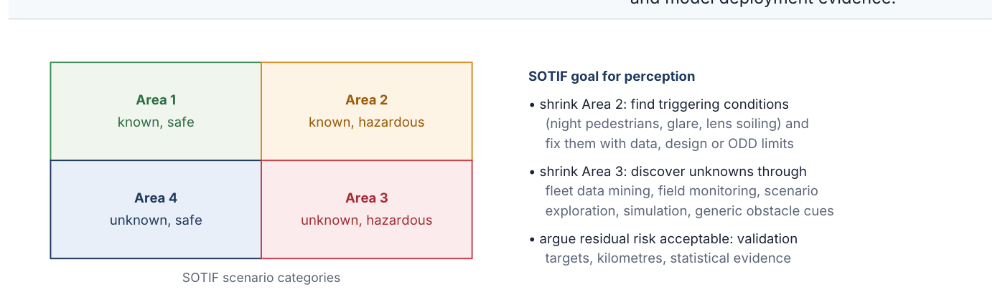
Architectural safety measures around the network
- Redundancy and diversity: camera + radar (+ lidar) with independent processing paths; or two different networks/approaches (e.g. learned detector + geometric free-space) for the critical function.
- Plausibility checks: physical limits on sizes, speeds and accelerations; consistency over time and across cameras.
- Uncertainty and out-of-distribution (OOD) monitoring: detect inputs unlike the training data (unusual weather, blocked lens, a new country) and degrade gracefully. Techniques include ensembles, MC dropout, calibrated scores, and feature-space distance measures — useful but imperfect; treat them as monitors, not guarantees.
- Sensor health monitoring: blockage, soiling, blur, glare and calibration-drift detection — a lens covered with mud is the most common real-world "triggering condition".
- ODD monitoring: know when the system is outside its validated domain and hand over or reduce function.
Research shows that carefully crafted patterns (stickers, patches) can fool detectors. In practice, natural robustness problems — rain drops, low sun, rare objects, sensor ageing, camera-to-camera variation — are far more frequent concerns in automotive programs than deliberate attacks, but cybersecurity (ISO/SAE 21434) still requires assessing manipulation threats to sensors and models. Section 15.5 explains the attacks and defences.
"With deep learning, data is the specification. Our data engine continuously collects difficult scenarios from the field, labels them, retrains and re-evaluates against a growing regression suite. For safety we follow SOTIF to systematically find triggering conditions and unknown scenarios, ISO/PAS 8800 for the AI-specific lifecycle, and we surround the network with monitors — plausibility, sensor health, redundancy — so that no single network decision is unchecked."
15.4Explainability: what Grad-CAM shows and what it cannot prove
Sooner or later a customer, an assessor or a colleague asks why the network made a particular decision. Section 16.3 gives the short answer: confidence comes from evidence about data, slices and monitors, not from explaining activations. This section explains the tools that the short answer mentions, because they are genuinely useful for one job: finding out what a model has actually learned, which is often not what the team intended.
Three ways to ask "which pixels mattered?"
Gradient methods ask how much the output would change if a pixel changed. The plain input gradient (a "saliency map", Simonyan et al., 2014) is cheap but noisy and speckled, because the gradient of a ReLU network jumps around from pixel to pixel. SmoothGrad averages it over noisy copies of the input; Integrated Gradients (Sundararajan et al., 2017) integrates the gradient along a straight path from a baseline image (often black) to the real one, so that the attributions add up exactly to the difference between the output for the image and for the baseline. The choice of baseline is part of the answer: "important compared to a black image" is a different question from "important compared to an empty road".
Grad-CAM (Selvaraju et al., 2017) works one level higher, on the feature maps of the last convolutional stage, where each channel already responds to a meaningful pattern. For a class score \(y^c\), it weights each feature map \(A^k\) by the average gradient flowing into it and keeps the positive part:
\[ \alpha_k^c = \frac{1}{Z}\sum_{i,j}\frac{\partial y^c}{\partial A^k_{ij}}, \qquad L^c_{\text{Grad-CAM}} = \mathrm{ReLU}\Big(\sum_k \alpha_k^c A^k\Big) \]The result is a coarse heatmap at the resolution of that stage, 7 × 7 for a 224-pixel input to a ResNet-50, so each cell covers 32 × 32 pixels. It says which region drove the class score, not which pixels. For a network that ends in global average pooling and one linear layer, \(\alpha_k^c\) is just the linear weight divided by the map size, and Grad-CAM reduces exactly to the older class activation map (CAM).
Perturbation methods treat the network as a black box: cover parts of the image (occlusion), or many random masks (RISE), and watch how the output changes. They are slow, needing hundreds or thousands of forward passes per image, but they work for any model and any output, which matters for detectors: D-RISE (Petsiuk et al., 2021) explains a single detected box by measuring how masks change the score and the position of that box. For transformers, the attention weights themselves are tempting to show, and "attention rollout" multiplies them through the layers; but attention says where information was gathered, not which information changed the decision, so it is a debugging view rather than an explanation.
An experiment: finding a shortcut
We trained two copies of the same tiny CNN (one 5 × 5 convolution layer with 8 channels, ReLU, global average pooling, a linear classifier; experiments/xai_adv.py) to tell vertical bars from horizontal bars in noisy 32 × 32 images. The first copy saw clean data. In the second copy's training data, 95 % of the vertical-bar images also had a bright square in the lower-right corner, the kind of accidental cue a real dataset contains (a logo, a timestamp, the bonnet of one test car that only drove in one city). Both models score about 99 % on their own training data, so the training curves do not reveal anything. On a clean test set the shortcut model drops to 78 %, because it recognises only 57 % of the vertical bars that come without the square; when the square is pasted onto horizontal bars, it calls 98 % of them vertical (the clean model: 1 %). Figure 15.3 shows why: for the shortcut model, 44 % of the Grad-CAM mass sits on the corner square, a region that covers less than 5 % of the map, against 19 % for the clean model.
This is the realistic use of explainability: a quick look at heatmaps over a sample of correct and incorrect predictions shows whether the model attends to the object or to its context. The best-known real case is the "Clever Hans" classifier of Lapuschkin et al. (2019), which recognised horses in a public benchmark by a copyright tag that appeared on many horse photos. In driving data, the usual suspects are image regions that correlate with a class only by accident: the ego vehicle's bonnet, a dashboard reflection, a sky colour typical of the city where most data of one class was recorded.
Why a heatmap is not evidence
Adebayo et al. (2018) ran a simple sanity check: randomise the trained weights layer by layer and see whether the explanation changes. Some popular methods (Guided Backprop, Guided Grad-CAM) produced almost the same pictures for a trained and a randomised network, so their maps showed mostly edges of the input, not what the network had learned. Plain gradients and Grad-CAM passed. Even methods that pass show where the evidence was, not why it was used or whether it will generalise, and a human looking at a plausible heatmap tends to trust the model more than it deserves. Explanations are therefore a tool to generate hypotheses ("the model may use the corner"), which are then tested with data: remove the cue, slice the evaluation, retrain with balanced data.
Useful habits: generate Grad-CAM or occlusion maps for the worst false positives and false negatives of every evaluation run, not for hand-picked successes; compare maps between model versions on the same images; and pair every visual suspicion with a counterfactual test (paste or remove the suspected cue, as in the experiment) before acting on it. Error slicing (Training 10.2) is the quantitative partner of this qualitative look.
"Heatmaps tell us where the network looked, and we use them to catch shortcuts, such as a model that relies on the background instead of the pedestrian. They are not our safety argument: that comes from specified data, sliced evaluation, regression suites and monitors around the network. When a heatmap looks suspicious, we confirm it with a counterfactual test before we change data or model."
15.5Adversarial examples: why tiny changes fool networks, and what defends against them
In 2013 Szegedy et al. reported something that still surprises people who first see it: a change to an image that is invisible to a human can make a well-trained classifier output any wrong class with high confidence. These adversarial examples are not random noise. They are found by optimisation, by asking the network itself which direction in pixel space hurts it most. For a perception engineer they matter for two reasons: they are a security threat that cybersecurity engineering (ISO/SAE 21434) has to assess, and they reveal how differently from humans the network uses its input.
Why a small change is enough: the linear explanation
Goodfellow et al. (2015) gave the explanation that is still the most useful intuition. Look at a single linear unit \(w^\top x\). If every input value is changed by at most \(\varepsilon\), the change of the output is largest when each value moves by \(\varepsilon\) in the direction of the sign of its weight, and then it equals \(\varepsilon \lVert w \rVert_1\). That sum grows with the number of inputs. A change of 2/255 per pixel is invisible, but summed over the 6.2 million values of a 1920 × 1080 colour image it can move a unit's output a long way, about 6000 times further than the same per-pixel change on a 32 × 32 grey image. Deep networks are built from piecewise linear pieces (ReLU, convolutions) precisely because that makes them easy to train, and the same linearity makes them easy to push.
The attack that follows from this is the fast gradient sign method (FGSM): compute the gradient of the loss with respect to the input once, and add \(\varepsilon \cdot \mathrm{sign}(\nabla_x \mathcal{L})\). Projected gradient descent (PGD, Madry et al., 2018) repeats small FGSM steps and projects back into the allowed \(\varepsilon\)-box after each one; it is the standard strong attack against which defences are measured. Both are white-box attacks that need the model's gradients. Adversarial examples also transfer: an example crafted on one model often fools another model trained for the same task, so an attacker can work on a substitute model without access to the real one.
The same toy CNN under attack
We attacked the clean toy model of Section 15.4 (99.6 % test accuracy; experiments/xai_adv.py). Figure 15.4 shows a vertical bar that the model classifies correctly with probability 0.93; adding the sign of the input gradient scaled to 8/255 per pixel, 3 % of the grey range, drops the probability to 0.09. Over the test set, FGSM at 4/255 leaves 47 % of the previously correct images correct, at 8/255 only 1.3 %, and ten PGD steps at 8/255 leave 0.2 %. Random noise of exactly the same size (each pixel moved by ±8/255 at random) leaves 99.8 % correct. The size of the change is not what hurts; its direction is.
Attacks in the physical world
A per-pixel attack needs write access to the image, which an outside attacker of a vehicle does not have. Physical attacks change the scene instead, and must survive viewing angle, distance, lighting and the camera's ISP. They exist. Printed adversarial images still fool classifiers when photographed with a phone (Kurakin et al., 2016). Eykholt et al. (2018) placed black and white stickers on a real stop sign so that a road-sign classifier read it as a speed-limit sign in most frames of a drive-by video. An adversarial patch (Brown et al., 2017) is a printed image that, placed anywhere in the scene, captures the classifier's attention; Thys et al. (2019) printed a patch that, held in front of a person's body, hid that person from a YOLOv2 person detector. Projected images and screens have been used to make detectors see objects that are not there. These attacks need the patch to be visible, close, at a suitable angle and usually tuned to one model; they are real but not easy, which is why the box in Section 15.3 ranks natural robustness problems as more frequent.
Defences, and why most of them failed
Adversarial training is the defence that has held up: train on adversarial examples generated during training, solving a min-max problem in which the attacker maximises the loss inside the \(\varepsilon\)-box and the network minimises it. Our toy model trained with FGSM examples at 8/255 kept 99.5 % clean accuracy and 85 % accuracy under PGD at 8/255. On real data the trade-off is harsher: on CIFAR-10 a PGD-trained ResNet of Madry et al. reached about 87 % clean accuracy (a standard model reaches about 95 %) and under 50 % against PGD at 8/255. Training costs grow with the number of attack steps per batch, so PGD training with 10 steps is roughly 11 times as expensive as normal training.
Many other defences, such as input denoising, JPEG compression, random resizing or non-differentiable preprocessing, looked strong in their papers because they made gradients useless to the standard attack, not because the model became robust. Athalye, Carlini and Wagner (2018) showed that most defences of that year's ICLR conference fell to attacks adapted to them. The lesson for anyone reviewing a robustness claim: ask whether the evaluation used an adaptive attack that knows the defence. Certified defences such as randomized smoothing (Cohen et al., 2019) prove that no perturbation within a radius can change the output, but the provable radii are small compared with a sticker or a patch.
Adversarial, natural and domain robustness are different problems
Adversarial robustness is about the worst case inside a small, attacker-chosen neighbourhood. Corruption robustness is about the average over realistic degradations such as noise, blur, rain, fog, low light and compression: ImageNet-C (Hendrycks and Dietterich, 2019) defines 15 corruption types at 5 severities and showed that accuracy falls a lot even without any attacker. Domain shift is about the distribution changing: a new camera, a new country, a new season. Improving one does not reliably improve the others; adversarially trained models, for example, are often more robust to some corruptions and less to others. For a vehicle, the second and third matter every day (Training 9.2, 9.4, Perception tasks 13.1), and the first is handled as a security threat.
In an automotive threat analysis (TARA), a physical patch attack is one threat scenario among many, rated by feasibility: the attacker needs knowledge of the model or a good substitute, physical access to the scene, and an attack that survives distance, angle and weather. The strongest mitigations are at system level rather than in the network: fusion with radar or lidar, which a sticker does not fool; temporal consistency across many frames and viewpoints; plausibility checks against maps and physics; and keeping the model and its weights confidential and integrity-protected on the ECU (Functional safety 8 covers SOTIF, where weather and the long tail belong).
Adversarially trained models have gradients that look like the object: their saliency maps highlight edges and shapes a human would point at, while those of standard models look like noise. This is one of the clearest hints that standard models rely on fine, high-frequency patterns that humans do not see but that genuinely predict the label in the training data.
16Cheat sheet: talking about it with customers, managers and developers
This section condenses the chapter into material you can reuse directly: one-line definitions, a map of how the concepts connect, and answers to questions that come up again and again in reviews, workshops and customer meetings.
16.1The whole field on one page
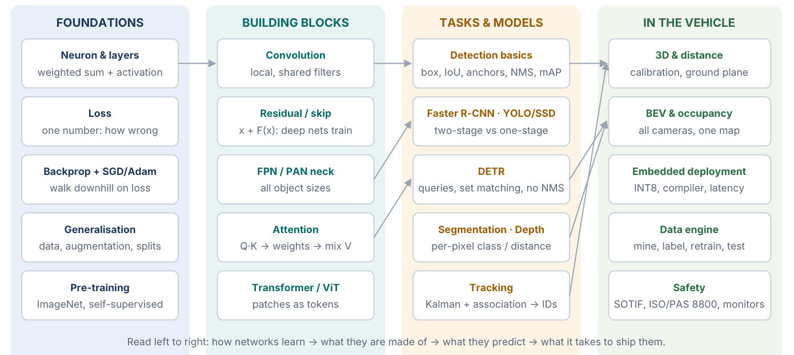
16.2One-liners
| Concept | One sentence you can say out loud |
|---|---|
| Neural network | A huge trainable function whose millions of weights are tuned from labelled examples instead of being programmed. |
| CNN | Slides small learned filters over the image; early layers find edges, later layers find objects; very efficient on automotive NPUs. |
| Attention | Each part of the input decides which other parts are relevant and pulls information from them — global context in one step. |
| Transformer / ViT | A network built from attention; ViT cuts an image into patches and treats them like words in a sentence. |
| Backbone / neck / head | Shared feature extractor, multi-scale fusion, and small task-specific output layers. |
| IoU | Overlap divided by union of two boxes — the standard measure of "how well do these boxes match". |
| Anchors | Pre-defined template boxes the network adjusts; modern detectors are mostly anchor-free. |
| NMS | Removes duplicate boxes around the same object by keeping the most confident one. |
| mAP | Area under the precision–recall curve averaged over classes — good for comparing models, not a function KPI. |
| Faster R-CNN | Two-stage: propose regions, then classify and refine each — accurate, heavier. |
| YOLO / SSD | One-stage: predict boxes for every grid location in one pass — fast, embedded-friendly. |
| DETR | Learned object queries predict a set of objects directly; one-to-one matching removes anchors and NMS. |
| Segmentation | A class for every pixel — road, curb, lane marking — used for free space and parking. |
| Depth estimation | A distance for every pixel, learned from lidar or self-supervised from video. |
| Tracking | Turns per-frame detections into objects with IDs, velocities and history (predict, associate, update). |
| BEV | All cameras' features fused into one top-down map around the car, in the frame planning uses. |
| Quantization | Running the network in 8-bit integers — 4× smaller, much faster and more efficient, with a small accuracy cost to verify. |
| Self-supervised pretraining | The backbone learns from unlabelled images by solving a task whose answer is in the data: match two views, match a moving teacher, or fill in hidden patches. |
| Soft-NMS | Instead of deleting boxes that overlap a kept box, lower their scores by an amount that grows with the overlap, so neighbours in a crowd survive. |
| Score calibration | Making a detector's 0.7 mean "correct 70 % of the time" for the post-processing that ships, per class and distance band. |
| Keypoint heatmap | One map per named point with a blob at its location; the point is the refined peak. |
| Grad-CAM | A coarse map of which region drove a class score, from last-stage feature maps weighted by their gradients; a debugging tool, not proof. |
| Adversarial example | An input changed in the direction that hurts the network most; a few 1/255 per pixel can flip the output while random noise of the same size does nothing. |
16.3Common questions and solid answers
"Why not just use the newest, most accurate model from the latest paper?"
Benchmarks are measured on data-center GPUs on public datasets. Our constraints are a fixed ECU, INT8, a latency budget, our cameras and ISP, our ODD, and a safety process. The best model for us is the most accurate one that is deployable, verifiable and maintainable on our target — and gains from better data usually exceed gains from a new architecture.
"What's your detection range / accuracy?"
Answer per class, distance band and condition, at the operating point the function uses — e.g. recall and precision for pedestrians at 0–30 m, 30–60 m, 60–80 m, day and night — plus distance error and time-tofirst-detection. Avoid quoting a single mAP.
"How do you handle objects the network has never seen?"
Several layers: training data mined for the long tail; class-agnostic cues — free-space segmentation, occupancy and depth — that detect "something is there" without knowing the class; sensor redundancy with radar; and out-of-distribution / health monitoring that degrades the function when inputs look unfamiliar. That's the SOTIF "unknown hazardous" area and we track it explicitly.
"Does the system learn while driving?"
No. The deployed network has frozen weights; behaviour is fixed per software release and validated before release. The fleet collects data, and learning happens offline in the next release cycle — this keeps the system testable and certifiable.
"Why do you need so much compute? It's just a camera."
Resolution and range: detecting a pedestrian at 80 m needs high-resolution input; multiple cameras multiply the load; and we run many tasks (objects, lanes, free space, signs, depth) at 30 fps with tight latency. Multitask networks share most of the compute, but the backbone still has to process millions of pixels per frame.
"Why does accuracy change when we change the camera, lens or ISP tuning?"
The network learned the statistics of the images in its training set. A new sensor, lens distortion, colour pipeline or tone mapping shifts that distribution. We re-evaluate on data from the production configuration and, if needed, fine-tune with data from the new setup; that's why ISP tuning and calibration are configuration items of a perception release.
"How do you explain decisions of a black box?"
We don't rely on explaining individual activations. Confidence comes from evidence: specified data and labelling, scenario-sliced KPIs, regression suites covering every known issue, triggering-condition analysis, monitors and redundancy around the network, and field monitoring after release. Visualisation tools (attention or saliency maps) help developers debug, but are not a safety argument by themselves. Section 15.4 shows what they can and cannot show.
"CNN or transformer?"
Both, for different jobs. CNNs remain the most efficient per-camera feature extractors on embedded hardware; attention shines when fusing multiple cameras, time and sensors into one representation. Most production designs are hybrids, and the balance shifts towards attention as NPUs add native support.
"How long and how much does it take to add a new object class?"
The architecture change is small (a head output); the cost is data: defining the class in the labelling guideline, collecting and labelling enough diverse examples across the ODD, retraining the multi-task network, and re-validating every function that depends on the shared backbone.
16.4Red flags to listen for in vendor or team proposals
- Accuracy quoted as mAP@0.5 on a public dataset, without per-class, per-distance results on your data.
- Latency measured on a desktop GPU in FP16, excluding pre- and post-processing.
- Random frame-level train/test splits from the same drives.
- No answer to "which operators fall back to the CPU on our SoC?"
- No plan for the calibration set, quantization validation per scenario, or ISP/camera changes.
- Unclear licence of training code and pre-trained weights, or untraceable training data.
QSelf-check questions
Short model answers first, then questions that check understanding with why and what if.
Q.1Core questions
What does a single neuron compute, and why is the non-linearity essential?Basic
A weighted sum of its inputs plus a bias, passed through an activation such as ReLU. Without the non-linearity, any stack of layers collapses into one linear map, which can only draw straight decision boundaries. The activation lets depth build progressively more complex functions: edges, then textures, then parts, then objects.
How does a network learn?Basic
A loss function scores how wrong the prediction is on a batch of labelled examples; backpropagation applies the chain rule to compute the gradient of the loss with respect to every weight; an optimiser (SGD with momentum, Adam/AdamW) takes a small step against the gradient. Repeating this over millions of examples tunes the weights. The learning rate, its schedule and the batch size decide whether training converges.
What is overfitting, and how do you detect and fight it?Basic
The model memorises the training set instead of learning patterns that generalise, so training loss keeps falling while validation loss rises. Remedies: more and more diverse data, augmentation, weight decay, dropout, early stopping and smaller models. The validation split must be independent: frames from the same drive in both train and test leak information and make results look far better than they are.
Why are convolutions such a good fit for images?Basic
A convolution slides a small learned filter over the image, so the same weights are shared at every position (translation equivariance) and each output depends only on a local neighbourhood. That needs far fewer parameters than a fully connected layer and matches image statistics: local structure first, larger context by stacking layers and downsampling, which grows the receptive field. Convolutions also map efficiently onto NPU MAC arrays.
Why did residual connections (ResNet) matter so much?Intermediate
Very deep plain networks trained worse than shallower ones because gradients vanished and optimisation got hard. A residual block learns a correction F(x) added to its input, y = x + F(x), so the identity is the easy default and gradients flow directly through the shortcuts. That made 50 to 150-layer networks trainable and is why skip connections appear in almost every modern architecture, transformers included.
What problem does a Feature Pyramid Network solve?Intermediate
Deep backbone features are semantically strong but coarse, shallow ones are fine but weak. An FPN adds a top-down path with lateral connections so every resolution level gets strong semantics, and a detector can find small distant objects on the fine levels and large near ones on the coarse levels with one network. For a car, a pedestrian at 80 m and a truck beside you differ in size by more than a factor of ten.
Explain attention with queries, keys and values.Intermediate
Each token produces a query (what it is looking for), a key (what it offers) and a value (what it passes on). Attention weights are softmax(QKᵀ/√d), the similarity of each query with every key, and the output is the weighted sum of values. It is a learned, content-dependent lookup that gives every token global context in one step. The cost grows with the square of the number of tokens, which is why vision uses windows, deformable attention or few queries.
How does a Vision Transformer turn an image into tokens, and why does it need so much data?Intermediate
It cuts the image into patches (e.g. 16 × 16 pixels), flattens and linearly embeds each, adds position embeddings and processes the sequence with transformer blocks. It lacks the built-in locality and translation priors of convolutions, so it must learn them from data; plain ViT beats CNNs only after very large pre-training. Self-supervised pre-training (e.g. masked autoencoding, DINO) and hierarchical designs such as Swin solved this for practical datasets.
What are IoU and NMS, and why do detectors need NMS?Basic
IoU is the area of overlap divided by the area of union of two boxes; it decides matches in training and evaluation. Dense detectors predict many overlapping boxes around one object; non-maximum suppression keeps the highest-scoring box and removes others whose IoU with it exceeds a threshold (often 0.5 to 0.7). NMS is a hand-tuned step that can delete one of two genuinely overlapping objects, e.g. pedestrians in a crowd, which is one motivation for DETR.
What do AP and mAP measure, and why is mAP not a safety KPI?Intermediate
AP is the area under the precision-recall curve for one class at a given IoU threshold; mAP averages over classes (and in COCO also over IoU thresholds 0.5 to 0.95). It is good for comparing models on a benchmark. A function needs recall and precision at its operating point, per class, distance band and condition, and the cost of each error type; a model with higher mAP can be worse for pedestrians at night at 50 m.
How does Faster R-CNN work?Intermediate
A backbone computes features; a region proposal network slides over them and scores anchors as object or background, regressing proposals; RoI Align samples a fixed-size feature patch for each proposal with bilinear interpolation (no rounding); a second head classifies each region and refines its box. Two stages give accurate localisation, especially for small objects, at higher and more variable cost than single-stage detectors.
What problem does focal loss solve?Intermediate
A single-stage detector evaluates tens of thousands of locations per image, almost all background. Plain cross-entropy is then dominated by many easy negatives. Focal loss multiplies the loss by (1 − p)γ, shrinking the contribution of examples the model already classifies confidently, so training concentrates on hard examples. It made RetinaNet as accurate as two-stage detectors.
What is the difference between anchor-based and anchor-free detectors?Intermediate
Anchor-based detectors predict offsets from predefined template boxes of several sizes and aspect ratios at each location, which need tuning per dataset. Anchor-free designs predict directly per location: FCOS regresses distances from a point to the four box sides, CenterNet predicts object centres as heatmap peaks plus size. They have fewer hyperparameters, and most modern YOLO versions are anchor-free.
How is DETR trained, and why does it need no NMS?Advanced
A transformer decoder turns a fixed set of learned object queries into a set of predictions. During training the Hungarian algorithm finds the one-to-one matching between predictions and ground truth with minimal cost, and only matched predictions are pulled towards their objects; the rest are trained as "no object". Because each object is claimed by exactly one query, duplicates are suppressed by training, not by NMS. The original converged slowly; deformable attention and denoising queries fixed that.
How do you get from 2D boxes to 3D objects with one camera?Intermediate
Monocular 3D detectors regress depth, 3D size and orientation per object, helped by priors (typical car sizes) and geometry (the ground-contact point with calibrated height and pitch). Depth from a single image is the weakest component and its error grows with distance. Camera intrinsics must be known to the network or normalised, otherwise a model trained on one lens misjudges distance on another.
Semantic, instance and panoptic segmentation: what is the difference?Basic
Semantic segmentation gives every pixel a class (road, kerb, car) without separating objects. Instance segmentation separates individual countable objects (this car, that car). Panoptic segmentation does both: "stuff" classes semantically and "things" as instances. Encoder-decoder networks such as U-Net or DeepLab shrink to understand context and grow back with skip connections to localise; quality is measured with mIoU.
How are monocular depth networks trained without lidar?Advanced
Self-supervised from video: the network predicts depth for one frame and a pose network predicts motion to the neighbouring frame; the target frame is reconstructed by warping the neighbour with that depth and pose, and the photometric error is the loss. It breaks on moving objects (which violate the static-scene assumption), textureless and reflective surfaces, and gives depth only up to scale unless camera height or speed is added.
How does tracking-by-detection work, and what was ByteTrack's insight?Intermediate
Each frame: predict existing tracks (usually a Kalman filter), associate detections with tracks by IoU or appearance, update matched tracks, start and end tracks with simple rules. ByteTrack's insight is to also use low-confidence detections in a second association pass: an occluded pedestrian often still gets a weak detection, and matching it to an existing track keeps the identity instead of discarding it as noise.
Why do multi-camera systems perceive in bird's-eye view?Intermediate
Planning works in a top-down metric frame, objects keep their size and shape there regardless of camera, and fusing cameras, time and other sensors is natural in one grid. The hard part is lifting 2D image features into 3D: Lift-Splat predicts a depth distribution per pixel and splats features into the grid; BEVFormer lets BEV queries attend to image features at projected locations. Calibration thereby moves inside the network.
How does a network get onto an automotive SoC?Intermediate
Train in PyTorch, export to ONNX, compile with the vendor toolchain (TensorRT, TIDL, QNN), which fuses layers, chooses kernels and quantises to INT8 using a calibration set, then measure latency and accuracy on the target. Unsupported operators fall back to the CPU and can dominate latency, so the architecture is chosen with the target's operator support in mind from day one, and pre- and post-processing are part of the latency budget.
What is a data engine?Basic
The loop that improves perception after the first model: deploy, find failures through triggers, shadow mode and disagreement between models, mine similar cases from the fleet, label them, retrain, evaluate on regression and scenario sets, release. Most accuracy gains in production come from this loop and the quality of labelling guidelines rather than from new architectures.
How can a backbone learn useful features from images without labels?Basic
By solving a task whose answer is in the data. Contrastive methods (SimCLR, MoCo) make two augmented views of the same image produce close embeddings and views of other images distant ones. Self-distillation (BYOL, DINO) makes a student match a slowly moving teacher on different crops, without negatives. Masked modelling (MAE) hides most patches and reconstructs them. Afterwards the projection head or decoder is discarded and the encoder is fine-tuned or used frozen with a light head (Section 4.5).
Why does MAE mask 75 % of the patches when BERT masks only 15 % of the words?Intermediate
Images are far more redundant than text: a missing patch can be filled by interpolating its neighbours without any understanding. Hiding three quarters forces the encoder to infer object shape and context. It also makes pretraining cheaper, because the large encoder processes only the visible quarter and a light decoder handles the rest.
What does Soft-NMS change compared with greedy NMS?Basic
Greedy NMS deletes every box whose IoU with a kept box exceeds a threshold. Soft-NMS multiplies such scores by a factor that shrinks with the overlap, for example exp(−IoU²/σ). Duplicates with IoU 0.85 lose most of their score, a real neighbour with IoU 0.57 keeps about half, and the final score threshold decides. It needs no retraining but the output threshold must be re-tuned (Section 5.7).
How do you check whether a detector's scores are calibrated?Intermediate
Take the post-processing chain that ships, including NMS and quantization, run it on a held-out set, match detections to ground truth at a stated IoU threshold, bin the scores and compare each bin's mean score with its fraction of correct boxes (reliability diagram, ECE), per class and per distance band or image region. Fix with per-class temperature, Platt or isotonic scaling and re-check after any change to thresholds, NMS or the model.
Why do keypoint networks predict heatmaps instead of regressing coordinates directly?Intermediate
A heatmap keeps the problem translation-equivariant: the same convolution that recognises an elbow anywhere paints a blob where it is, like a small segmentation task. Direct regression must convert local evidence into absolute numbers and trains worse. The cost is a stride-limited grid, so the peak must be refined (quarter shift or Taylor fit), and large output tensors; SimCC-style 1D classification reduces both.
Compare top-down, bottom-up and one-stage multi-person pose estimation.Advanced
Top-down detects people, crops each and runs a single-person pose network: best accuracy, cost linear in the number of people, misses whatever the detector misses. Bottom-up predicts all keypoints plus grouping cues (part affinity fields or embeddings) in one pass: constant cost, grouping fails in dense crowds. One-stage adds K keypoint offsets to a detector head: one pass, grouping for free, coarser points; often the choice on embedded targets.
What does Grad-CAM compute, and at what resolution?Intermediate
For a class score it averages the gradient over each feature map of the last convolutional stage to get one weight per channel, sums the weighted maps and applies ReLU. The heatmap has the resolution of that stage, 7 × 7 for a 224-pixel ResNet-50 input, so it shows which region mattered, not which pixels. For a network ending in global average pooling and one linear layer it equals the class activation map.
Why can a perturbation of 8/255 per pixel flip a classifier while random noise of the same size does nothing?Intermediate
The attack moves every pixel in the direction that increases the loss, so the small changes add up coherently: for a linear unit the output moves by ε times the L1 norm of the weights, which grows with the number of inputs. Random signs mostly cancel. In the chapter's toy CNN, FGSM at 8/255 left 1.3 % of images correct, random ±8/255 left 99.8 %.
Q.2Why and what if
Why can FLOPs be a poor predictor of latency on an accelerator?Why
Accelerators are often limited by memory bandwidth and by operator support, not arithmetic. Depthwise convolutions have few FLOPs but low arithmetic intensity; reshapes, attention softmaxes or unusual activations may run on the CPU; tensor layouts may need conversions. A network with more FLOPs built from well-supported dense convolutions can be faster than a "lighter" one.
What if the confidence score is used as a probability?What if
Detector scores are usually not calibrated: 0.9 does not mean right nine times out of ten, and calibration differs per class, distance and condition. Downstream fusion or decision logic that treats them as probabilities is miscalibrated. Calibrate scores on held-out data (temperature scaling, isotonic regression) and validate thresholds at the operating point.
What if the INT8 calibration set contains only daytime images?What if
Quantisation ranges are fitted to daytime activation statistics, so dark night images use only a few of the 256 levels or clip differently, and night accuracy can drop far more than the overall average suggests. The calibration set is a safety-relevant artefact: it must cover the ODD, be versioned, and accuracy must be checked per scenario after quantisation.
Why does NMS struggle in crowds, and what helps?Why
Two pedestrians standing close produce boxes with high IoU, so NMS deletes the weaker one as a duplicate. A higher threshold keeps both but also keeps real duplicates. Soft-NMS lowers scores instead of deleting, set-prediction detectors avoid NMS, and tracking with temporal context recovers briefly suppressed objects.
What if a model trained on pinhole images is deployed on fisheye cameras?What if
Objects at the periphery are distorted, rotated and scaled differently from anything seen in training, so recall drops at the edges, and any 3D regression that assumed pinhole geometry is wrong. Train on fisheye data (or synthetic fisheye conversions with the real camera model), use distortion-aware heads, or rectify into cylindrical views.
Why can self-supervised depth fail on a car driving directly ahead at the same speed?Why
That car does not move relative to the camera, so the photometric loss is best explained by placing it infinitely far away, and the network learns "holes" of infinite depth for such vehicles. Masking pixels that do not move between frames, motion-segmentation networks and additional supervision from lidar or stereo address it.
What if random frame-level train/test splits are used?What if
Neighbouring frames of one drive are almost identical, so the test set contains near-copies of training images and measures memorisation, not generalisation. Split by drive, location and date, and keep separate scenario sets for conditions such as night, rain and tunnels.
Why do CNNs remain common on embedded cameras even though transformers are more accurate on benchmarks?Why
Convolutions are local, regular and well supported by NPUs and INT8 toolchains, and their cost scales linearly with image size. Global attention scales quadratically with tokens and includes softmax and normalisation steps that quantise poorly. Systems therefore often use CNN backbones per camera and attention for fusion across cameras and time.
What if a new object class must be added late in a programme?What if
The network change is small, a head output; the cost is data: a labelling guideline, diverse examples across the ODD, relabelling old data where the class was background, retraining, and re-running the full regression and safety evaluation, because every class can affect the others. Plan the class set early.
Why is a deployed network not allowed to learn while driving?Why
Its behaviour must be fixed and validated per software release; online learning would make the tested system differ from the deployed one and could drift with unrepresentative data. The fleet collects data and learning happens offline in the next release cycle through the data engine.
What if a self-supervised backbone was pretrained with strong colour jitter and is then used for traffic-light state?What if
The pretraining taught the features to ignore colour, which is the very information needed. Fine-tuning can recover some of it, but a frozen-backbone design with a light head will struggle. Augmentations define invariances: choose them for the task family, or keep colour-sensitive tasks on features that were not trained to be colour-invariant.
What if NMS is changed after the scores were calibrated?What if
The calibration no longer holds: different boxes survive, and with Soft-NMS surviving neighbours carry decayed scores. Trackers, fusion and functions that use the score as an existence probability then get systematically wrong inputs. Calibrate and verify the exact post-processing that ships and repeat it after every change.
Why is a convincing Grad-CAM heatmap not evidence that the model is safe?Why
It shows where evidence was gathered, not why or whether it generalises, and some popular methods produce similar pictures for trained and randomised networks (Adebayo et al., 2018). Humans also trust plausible maps too much. Use maps to form hypotheses, such as a shortcut on the background, and confirm them with counterfactual tests and sliced evaluation; the safety argument rests on data, evaluation and monitors.
What if a published defence reports high robustness against FGSM and PGD?What if
Ask whether it was evaluated with an adaptive attack that knows the defence. Many defences only masked the gradients the standard attacks rely on and fell to adapted attacks (Athalye et al., 2018). Adversarial training and certified methods have held up; the others need an independent adaptive evaluation before any claim is accepted.
Why are system-level measures more effective than network hardening against physical patch attacks on a vehicle?Why
A patch has to be visible, close and suitably placed, and it usually targets one model and one sensor. Radar or lidar are not fooled by it, temporal consistency across many frames and viewpoints exposes it, and plausibility checks against maps and physics catch impossible objects. Adversarial training of the camera network costs accuracy and compute and protects only within the small budget it was trained for.
GGlossary
- Activation function
- Non-linear function applied after a weighted sum (ReLU, SiLU, GELU). Without it, a deep network collapses to a linear one.
- Adversarial example
- Input changed by an optimised, usually tiny perturbation that makes the model wrong.
- Adversarial training
- Training on adversarial examples generated on the fly; the defence that has held up, at a cost in compute and clean accuracy.
- Anchor (default box, prior)
- Pre-defined template box at a feature-map location that the network refines.
- Anchor-free
- Detectors that predict boxes from points (distances to edges or centre + size) without templates.
- AP / mAP
- Average Precision: area under the precision–recall curve for one class; mAP averages over classes (and in COCO also over IoU thresholds 0.5–0.95).
- Attention
- Mechanism computing content-dependent weights between tokens (softmax of query–key similarity) to mix their values.
- Augmentation
- Random transformations of training images (crop, flip, colour, blur, mosaic) to improve generalisation.
- Backbone
- The feature-extraction part of a network (ResNet, RegNet, ViT…).
- Backpropagation
- Efficient computation of the loss gradient for every weight via the chain rule.
- Batch normalization
- Normalises activations during training; folded into the preceding conv at inference.
- BEV
- Bird's-eye view: top-down grid around the vehicle in which multi-camera features and outputs are represented.
- Bipartite / Hungarian matching
- Optimal one-to-one assignment between two sets given a cost matrix; used in DETR training and in tracking.
- Calibration (camera)
- Intrinsics (focal length, principal point, distortion) and extrinsics (position/orientation in the vehicle). Defines pixel-to-ray geometry.
- Calibration (quantization)
- Running representative data through a model to choose INT8 scales.
- Collapse (representation)
- Failure of self-supervised training in which every input maps to the same output; prevented by negatives, centring and sharpening, or asymmetric designs.
- Cross-attention
- Attention where queries come from one set (object queries, BEV cells) and keys/values from another (image features).
- Cross-entropy
- Standard classification loss; penalises confident wrong predictions strongly.
- Decoder
- Part of a network that upsamples or turns features/queries into outputs.
- Deformable attention
- Attention that samples a few learned points around a reference location instead of all tokens.
- Depthwise-separable conv
- Per-channel spatial conv followed by a 1×1 channelmixing conv; ~8–9× cheaper than a standard 3×3.
- Detection calibration
- Agreement between detector scores and the observed fraction of correct boxes, measured after NMS at a stated IoU threshold, per class and slice.
- Distillation
- Training a small student network to mimic a large teacher.
- Domain gap / shift
- Statistical difference between training and deployment data (new camera, country, weather, simulator vs. real).
- Epoch
- One pass over the entire training dataset.
- Feature map
- Output of a conv layer: H × W × channels, each channel a learned pattern detector.
- FGSM / PGD
- Gradient attacks: one step along the sign of the input gradient (FGSM), or many projected small steps (PGD).
- Focal loss
- Loss that down-weights easy examples so training focuses on hard ones; solves foreground/background imbalance.
- FPN / PAN
- Feature pyramid neck fusing deep and shallow features so every scale is semantically strong.
- Free space
- Drivable area not occupied by obstacles; often from segmentation.
- Generalisation
- Performing well on unseen data — the actual goal of training.
- Grad-CAM
- Class-specific heatmap from last-stage feature maps weighted by their average gradients, followed by ReLU.
- Head
- Task-specific output layers on top of shared features.
- InfoNCE (NT-Xent)
- Contrastive loss: pick the partner view of each sample among all views in the batch; chance level is log(2N − 1).
- Integrated Gradients
- Attribution that integrates input gradients along a path from a baseline image; attributions sum to the output difference.
- IoU
- Intersection over Union of two regions; GIoU/DIoU/CIoU are loss-friendly variants.
- IPM
- Inverse perspective mapping: projects pixels to a flat ground plane via a homography.
- Kalman filter
- Recursive estimator combining a motion prediction and noisy measurements, weighted by uncertainty.
- Keypoint heatmap
- Per-keypoint output map trained to show a Gaussian blob at the point; decoded by a refined peak search.
- Label assignment
- Deciding which predictions are trained as positives for each ground-truth object (IoU-based, SimOTA, task-aligned, Hungarian).
- LayerNorm
- Normalisation across features of each token; standard in transformers.
- Learning rate
- Step size of gradient descent; the most important training hyper-parameter.
- Lift–Splat
- BEV method that predicts a depth distribution per pixel, lifts features into 3D and pools them into a grid.
- Linear probe
- Evaluation of frozen features by training only a linear classifier on top of them.
- MAE (masked autoencoder)
- Self-supervised ViT pretraining that hides 75 % of patches and reconstructs their pixels with a light decoder.
- mIoU
- Mean IoU over classes; standard segmentation metric.
- MOTA / IDF1 / HOTA
- Tracking metrics combining detection errors, identity consistency and association accuracy.
- Multi-head attention
- Several attention operations in parallel, each learning a different relation.
- NMS
- Non-Maximum Suppression: keep the highestscoring box, remove overlapping duplicates.
- Object query
- Learned vector in DETR-style models that is decoded into one object (or "no object").
- Occupancy network
- Predicts which 3D voxels around the vehicle are occupied, independent of object class.
- ODD
- Operational design domain: conditions under which a function is designed to work.
- OKS (object keypoint similarity)
- Keypoint counterpart of IoU: errors normalised by object scale and a per-keypoint tolerance.
- Overfitting
- Memorising training data at the expense of generalisation.
- Positional encoding
- Information added to tokens so transformers know where each token comes from.
- Precision / recall
- Fraction of detections that are correct / fraction of real objects that are detected.
- PTQ / QAT
- Post-training quantization (no retraining) vs. quantization-aware training (simulated rounding during fine-tuning).
- Receptive field
- Region of the input image that influences one output value.
- Residual connection
- Skip path adding a block's input to its output (x + F(x)); enables very deep networks.
- RoI Align
- Crops fixed-size features for a region using bilinear sampling, without coordinate rounding.
- RPN
- Region Proposal Network: the first stage of Faster R-CNN.
- Self-supervised learning
- Learning from unlabelled data via pretext tasks (masked reconstruction, view consistency, photometric reprojection).
- Shortcut learning
- A model relying on an accidental cue that correlates with the label in training data (a logo, a corner mark, background).
- Soft-NMS
- NMS variant that multiplies the scores of overlapping boxes by a decaying factor instead of deleting them.
- SOTIF (ISO 21448)
- Safety of the intended functionality: hazards from functional insufficiencies rather than faults.
- Stride
- Step size of a conv/pooling window; stride 2 halves resolution. "/8" denotes total stride 8.
- Swin
- Hierarchical vision transformer using shifted local windows.
- Token
- One element processed by a transformer: a word, an image patch, a BEV cell, an object query.
- TOPS
- Tera-operations per second — peak accelerator throughput, not achieved throughput.
- Triggering condition
- SOTIF term: a specific condition (glare, rain, unusual object) that can cause a functional insufficiency to lead to hazardous behaviour.
- ViT
- Vision Transformer: image split into patches processed as tokens by a transformer.
RFurther reading
Original papers worth reading (all freely available on arXiv): ResNet (He et al., 2015); FPN (Lin et al., 2016); Faster R-CNN (Ren et al., 2015); SSD (Liu et al., 2016); YOLO (Redmon et al., 2016); Focal Loss / RetinaNet (Lin et al., 2017); Mask R-CNN (He et al., 2017); "Attention Is All You Need" (Vaswani et al., 2017); FCOS (Tian et al., 2019); CenterNet "Objects as Points" (Zhou et al., 2019); DETR (Carion et al., 2020); ViT (Dosovitskiy et al., 2020); Deformable DETR (Zhu et al., 2020); Swin (Liu et al., 2021); Lift-Splat-Shoot (Philion & Fidler, 2020); BEVFormer (Li et al., 2022); Monodepth2 (Godard et al., 2019); SORT (Bewley et al., 2016) and ByteTrack (Zhang et al., 2022); RT-DETR (Zhao et al., 2023); YOLOv10 (Wang et al., 2024). For safety: ISO 21448:2022, ISO/PAS 8800:2024, and the Automotive SPICE 4.0 MLE process group. Benchmark figures and model versions evolve quickly — verify current numbers before quoting them externally.
For Sections 4.5, 5.7, 10.5, 15.4 and 15.5: SimCLR (Chen et al., 2020); MoCo (He et al., 2020); BYOL (Grill et al., 2020); DINO (Caron et al., 2021); MAE (He et al., 2022); I-JEPA (Assran et al., 2023); DINOv2 (Oquab et al., 2023); Soft-NMS (Bodla et al., 2017); DIoU-NMS (Zheng et al., 2020); Adaptive NMS (Liu et al., 2019); multivariate confidence calibration for object detection (Küppers et al., 2020); SimpleBaseline (Xiao et al., 2018); HRNet (Sun et al., 2019); OpenPose (Cao et al., 2017); DARK (Zhang et al., 2020); SimCC (Li et al., 2022); RTMPose (Jiang et al., 2023); ViTPose (Xu et al., 2022); Grad-CAM (Selvaraju et al., 2017); Integrated Gradients (Sundararajan et al., 2017); RISE (Petsiuk et al., 2018) and D-RISE (Petsiuk et al., 2021); "Sanity Checks for Saliency Maps" (Adebayo et al., 2018); "Unmasking Clever Hans predictors" (Lapuschkin et al., 2019); "Intriguing properties of neural networks" (Szegedy et al., 2014); FGSM (Goodfellow et al., 2015); PGD (Madry et al., 2018); physical stop-sign attack (Eykholt et al., 2018); adversarial patch (Brown et al., 2017); "Fooling automated surveillance cameras" (Thys et al., 2019); obfuscated gradients (Athalye et al., 2018); randomized smoothing (Cohen et al., 2019); ImageNet-C (Hendrycks and Dietterich, 2019). Experiments for these sections: tools/